Amazon WorkSpaces Cost Optimizer
Amazon WorkSpaces Cost Optimizer v2.9.10をCloudFormationでデプロイし、課金モードの評価と変更結果を確認する
DryRun、料金しきい値、実行時刻、ECSタスク、CloudWatch Logs、S3レポートおよびダッシュボードの確認方法を整理する
Amazon WorkSpaces Cost Optimizer デプロイ・運用手順
目次
概要
東京リージョンの単一アカウントへCost Optimizer for Amazon WorkSpaces v2.9.10を新規VPC構成でデプロイし、Dry Runレポート、料金しきい値、Dry Run解除および実行結果を管理するための総合案内
本手順書で実施すること
- ソリューション構成と重要事項を確認してCloudFormationでデプロイする
- ECS、CloudWatch Logs、S3 CSVおよびCloudWatchダッシュボードを確認する
- CloudFormationによる設定変更からWorkSpaces実設定の成功判定までを実施する
完了条件
- ✔ 各作業を対応する個別手順書で実施できること
- ✔ 設定更新の完了と日次処理・課金モード変更の完了が分離されていること
設定値
| 項目 | 今回の設定値 |
|---|---|
| ソリューションバージョン | v2.9.10 |
| デプロイ方式 | 単一アカウント／ハブテンプレート |
| Dry Run解除後の実処理 | 未確認 |
参考：AWS公式資料
出典：AWS公式実装ガイドを仕様の正として使用する
章構成
取得済み証跡の完了境界
次の表は2026年9月8日に取得した証跡の状態です。現在のAWS環境を示すものではないため、後続作業を開始する前にCloudFormation、EventBridgeおよびECSの状態を再確認する
| 項目 | 確認値 |
|---|---|
| CloudFormation | UPDATE_COMPLETE |
| ソリューション | v2.9.10 |
| DryRun | No |
| 未使用WorkSpaceの終了 | No |
| 設定済みCron | cron(0 23 * * ? *)（08:00 JST） |
| EventBridgeルール | 一時的に無効 |
| 無効化理由 | 2026年9月8日00:01 UTCに実行済みであり、同日23:00 UTCの再実行を防止するため |
| DryRun解除後の本処理 | 未実行・未確認 |
警告：EventBridgeを1日複数回実行しない
AWS公式は、このソリューションを1日1回だけ実行し、EventBridgeスケジュールを変更しないよう案内しています。同一UTC日内の複数実行は請求対象時間や実行モード変換の判定を不正確にする可能性があります。ルールを再有効化する場合は、現在時刻、直近の実行履歴および次回トリガーを確認し、同一UTC日内に2回起動しないことを確認する
運用原則
- 料金しきい値とDryRunはCloudFormation変更セットで変更する
- CloudFormation配下のECSタスク定義、IAM、S3、EventBridge等を個別編集しない
DryRun=Noへ変更する前に、複数月分のDryRunレポート、お客様承認、除外対象、切り戻し方法を確認する- 自動変更から除外するWorkSpaceには、公式仕様に従って
Skip_Convertタグを使用する - 成功可否はダッシュボードだけで判断せず、ECS、CloudWatch Logs、S3 CSV、WorkSpaces実設定を突合する
CloudFormationデプロイ手順（v2.9.10）
目次
概要
東京リージョンへCost Optimizer for Amazon WorkSpaces v2.9.10を、単一アカウント・新規VPC・Dry Run有効の安全設定でデプロイします。スタックsample-cfn-co-001と41リソースの作成完了までを確認する
本手順書で実施すること
- 固定バージョンの公式テンプレートを指定する
- VPC、Dry Run、料金しきい値および未使用WorkSpace終了設定を入力する
- CloudFormationの作成完了と出力値を確認する
完了条件
- ✔ CloudFormationスタックが
CREATE_COMPLETEであること - ✔
SolutionVersion=v2.9.10、DryRun=Yesおよび対象の料金しきい値を確認できること - ✔ 取得済み証跡の構成では41リソースが
CREATE_COMPLETEであること
設定値
| 項目 | 今回の設定値 |
|---|---|
| スタック名 | sample-cfn-co-001 |
| ソリューションバージョン | v2.9.10 |
| VPC方式 | 新規VPC |
| Dry Run | Yes（初期構築時） |
参考：AWS公式資料
出典：AWS公式：ハブスタックの起動のパラメータと注意事項を作業前に確認する
ソリューション構成と重要事項
Cost Optimizer for Amazon WorkSpacesは、WorkSpaces本体の組み込み機能ではなく、AWS Solutions Libraryから提供されるCloudFormationテンプレートで構築するソリューションです。WorkSpacesの利用時間と料金しきい値を比較し、時間課金のAUTO_STOPと月額課金のALWAYS_ONのどちらが適しているかを日次で判定する
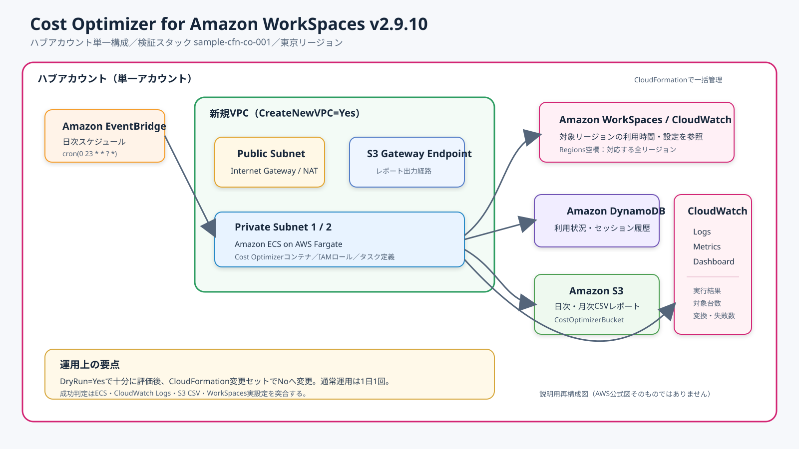
構成図_ハブアカウント単一構成_v2.9.10
今回の構成では、東京リージョンにハブテンプレートだけをデプロイし、同一AWSアカウント内のWorkSpacesを監視します。スポークアカウントは使用しない
| 構成要素 | 役割 |
|---|---|
| Amazon EventBridge | 1日1回、ECSタスクを起動する |
| Amazon ECS／AWS Fargate | WorkSpacesの利用時間集計、料金しきい値との比較、課金モード変更を実行する |
| Amazon DynamoDB | WorkSpaceの利用状況とセッション情報を保持する |
| Amazon S3 | 日次・月次CSVレポートとS3アクセスログを保存する |
| CloudWatch Logs／ダッシュボード | 実行ログ、対象台数、変換件数、エラーおよび処理時間を確認する |
処理は、EventBridgeによる起動、ECSタスクによる利用状況取得、料金しきい値との比較、DynamoDBへの状態保存、S3へのCSV出力、CloudWatchへのログ・メトリクス出力の順に進む
| 項目 | 今回の設定 | 事前に理解しておく内容 |
|---|---|---|
| Dry Run | 初期構築時はYes |
判定結果をレポートへ出力しますが、課金モードは変更しない |
| 未使用WorkSpace終了 | No |
未使用WorkSpaceを自動終了しない |
| 除外タグ | Skip_Convert |
指定したWorkSpaceを課金モード変更と終了の対象外にする |
| 監視対象リージョン | Regionsは空欄 |
同一アカウント内の対応リージョンを走査するため、必要に応じて対象を限定する |
| VPC | CreateNewVPC=Yes |
NAT GatewayとElastic IPが作成され、継続料金が発生する |
警告：日次処理を重複実行しない
本ソリューションは1日1回の利用時間計算を前提としています。EventBridgeスケジュールの直接変更や同一UTC日内のECSタスク複数実行は、請求対象時間と課金モード判定を不正確にする可能性があります。CloudFormationを構成管理の正とし、配下のリソースを個別編集しない
CloudFormationスタックを削除しても、S3バケット、DynamoDBテーブル、ECS実行ログおよびVPC Flow Logsの一部はDeletionPolicy: Retainにより残ります。削除時はデータ保持と残存料金を個別に確認する
バージョン差分と作成リソースの詳細は、v2.8.1とv2.9.10の差分および作成リソース一覧を参照する
前提と事前確認
本手順は、Cost Optimizer for Amazon WorkSpacesを東京リージョンへ単一アカウント構成でデプロイする例
- AWSマネジメントコンソール右上が「アジアパシフィック（東京）」であることを確認
- CloudFormation、IAM、ECS、VPC、S3、DynamoDB、CloudWatch、EventBridge、WorkSpacesに必要な権限があることを確認
- 新規VPC用CIDRが既存ネットワークと重複しないことを確認
- 初回は必ず
DryRun=Yes、TerminateUnusedWorkspaces=Noと - 本手順書と同じ構成を再現する場合は、バージョンを固定したv2.9.10公式配布テンプレートを使用します。
latestは将来別バージョンへ更新されるため、常用しない
テンプレートを指定する
- CloudFormationで「スタックの作成」を選択
- 「既存のテンプレートを選択」および「Amazon S3 URL」を選択
- 次のv2.9.10公式配布テンプレートURLを入力し、「次へ」を選択
https://solutions-reference.s3.amazonaws.com/cost-optimizer-for-amazon-workspaces/v2.9.10/cost-optimizer-for-amazon-workspaces.template
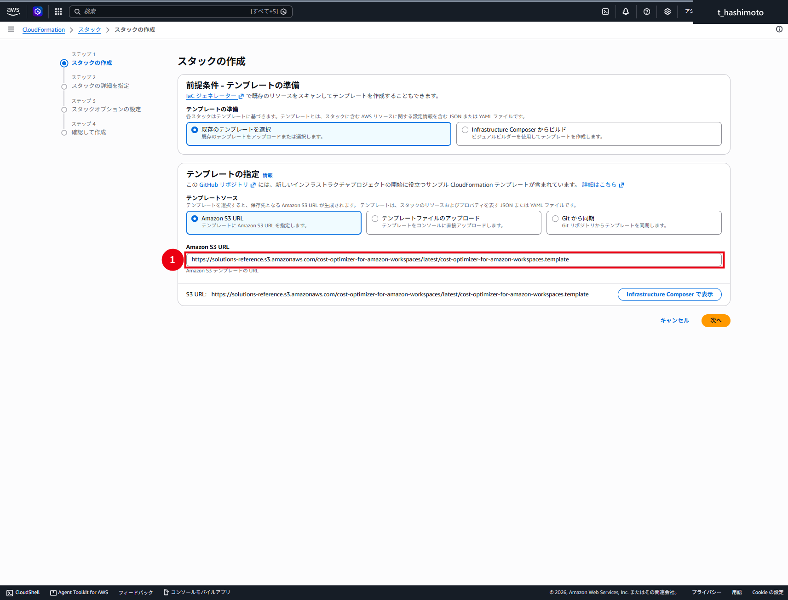
画像内の番号
- ① 固定バージョンの公式テンプレートURLを入力する
注意：固定バージョンのテンプレートURLを使用する
図1は2026年9月8日に取得した証跡であり、当時v2.9.10を指していたlatest URLが表示されています。再構築時は、画像内のlatestを上記のv2.9.10に置き換えて入力してください。別バージョンへ更新する場合は、そのバージョンのリリースノートと変更セットを事前に確認する
テンプレートを事前に承認・保管する運用では、「テンプレートファイルのアップロード」を使用しても使用できる
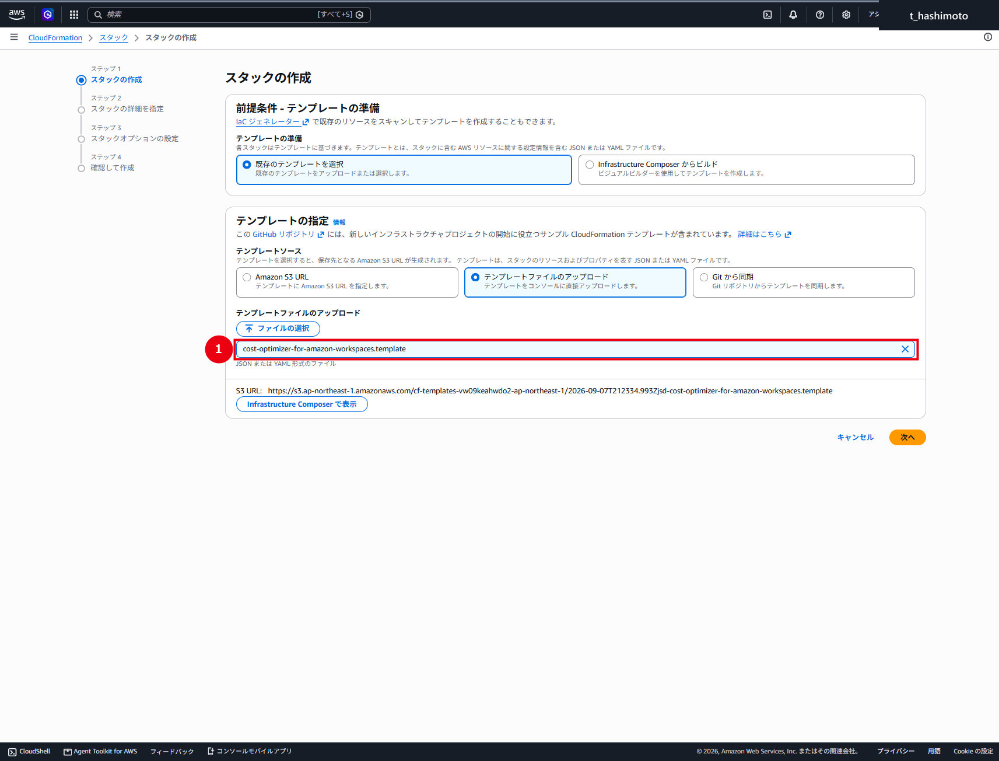
画像内の番号
- ① 選択した承認済みテンプレートファイルの名前を確認する
スタック名とネットワークを設定する
今回の設定値は次のとおり
| 項目 | 設定値 | 説明 |
|---|---|---|
| Stack name | sample-cfn-co-001 |
今回のスタック名 |
| Create New VPC | Yes |
専用VPCを新規作成 |
| VpcCIDR | 10.250.0.0/24 |
専用VPC |
| PublicSubnetCIDR | 10.250.0.0/28 |
NAT Gateway用パブリックサブネット |
| PrivateSubnet1CIDR | 10.250.0.32/28 |
ECSタスク用プライベートサブネット1 |
| PrivateSubnet2CIDR | 10.250.0.48/28 |
ECSタスク用プライベートサブネット2 |
| EgressCIDR | 0.0.0.0/0 |
ECSタスクの送信先。組織基準に合わせて制限を検討する |
Create New VPC=Yes のため、Existing VPC SettingsのサブネットIDとセキュリティグループIDは空欄にする
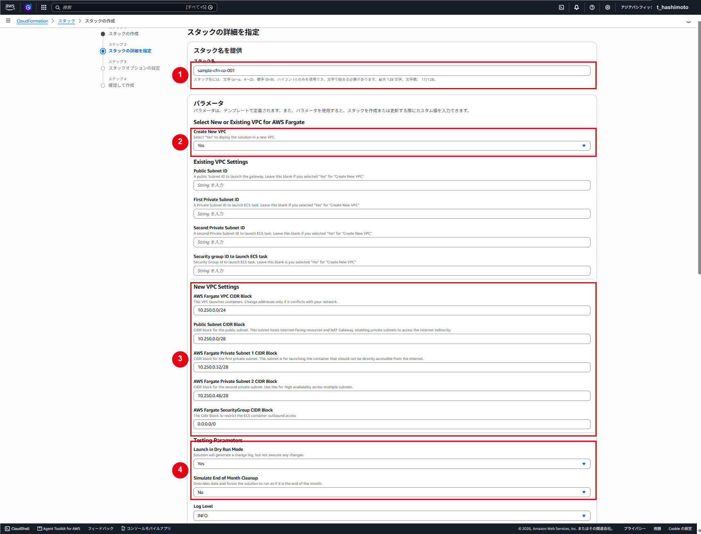
画像内の番号
- ① スタック名を入力する
- ② 新規VPCを作成するため
CreateNewVPC=Yesを選択する - ③ VPCおよびサブネットのCIDRを入力する
- ④ 初期構築では
DryRun=Yes、TestEndOfMonth=Noを選択する
安全設定と料金しきい値を設定する
| 分類 | パラメータ | 設定値 |
|---|---|---|
| Testing | DryRun | Yes |
| Testing | TestEndOfMonth | No |
| Logging | LogLevel | INFO |
| Pricing | ValueLimit | 81 |
| Pricing | StandardLimit | 85 |
| Pricing | PerformanceLimit | 83 |
| Pricing | GraphicsG4dnLimit | 217 |
| Pricing | GraphicsProG4dnLimit | 80 |
| Pricing | PowerLimit | 83 |
| Pricing | PowerProLimit | 80 |
| Pricing | GeneralPurpose4xlargeLimit | 121 |
| Pricing | GeneralPurpose8xlargeLimit | 125 |
| Container | Auto-update Container Image | Yes |
| Regions | List of AWS Regions | 空欄 |
| Termination | Terminate unused workspaces | No（選択肢：No／Dry Run／Yes） |
| Termination | Number of months | 1 |
| Multi account | Organization ID | 空欄 |
| Multi account | Management Account ID | 空欄 |
注意：料金しきい値は今回の明示設定値
83、217、83、80等は取得時点のAWS実装ガイド掲載値を明示設定した値であり、v2.9.10配布テンプレート自体の既定値と同義ではありません。料金改定や地域差を確認し、変更管理のうえで値を決定する
Regions を空欄にすると、アカウント内の対応リージョンをすべて走査します。組織で未有効化のリージョンに対するエラーを抑え、処理範囲を明確にする場合は、WorkSpacesを運用するリージョンだけをカンマ区切りで指定する
TerminateUnusedWorkspaces は、Noで終了機能を無効化し、Dry Runで終了候補だけをレポートし、Yesで終了を許可します。実際に終了するには、全体のDryRun=Noも必要です。スタンバイWorkSpaceは対象外です。TerminateUnusedWorkspaces=YesとTestEndOfMonth=Yesを同時に設定しないでください
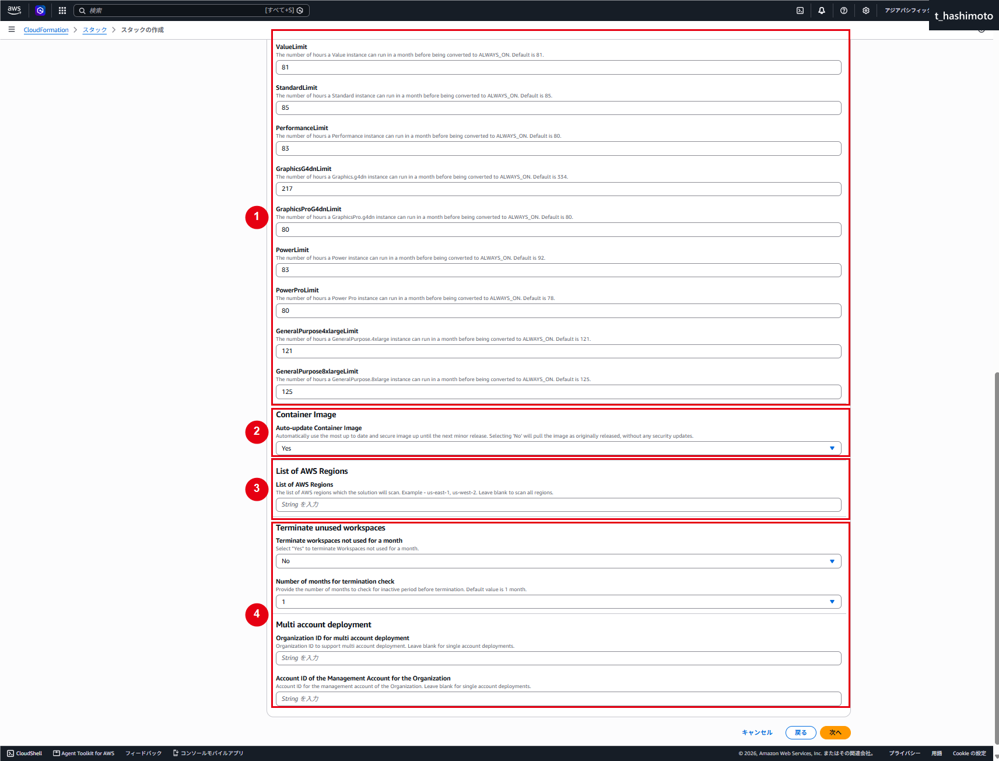
画像内の番号
- ① バンドル種別ごとの料金しきい値を入力する
- ② コンテナイメージの自動更新設定を確認する
- ③ 監視対象リージョンを入力します。空欄時の対象範囲も確認する
- ④ 未使用WorkSpace終了設定とマルチアカウント設定を確認する
スタックオプションを設定する
- CloudFormationサービスロールは、組織方針で指定された場合のみ選択
- 「プロビジョニング失敗時の動作」は すべてのリソースをロールバック と
- ロールバック中に新規作成されたリソースは、通常の削除ポリシーに従う設定を維持
AWS::IAM::Role等の作成を確認し、「AWS CloudFormationによってIAMリソースがカスタム名で作成される場合があることを承認します」を選択
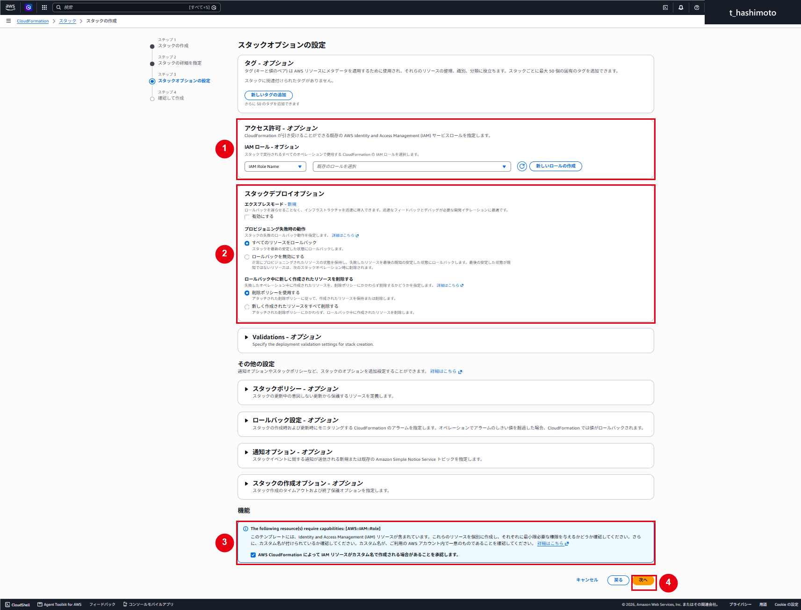
画像内の番号
- ① CloudFormationサービスロールの指定を確認する
- ② プロビジョニング失敗時にすべてのリソースをロールバックする設定を選択する
- ③ IAMリソースの作成に関する承認欄を選択する
- ④ 「次へ」を選択する
内容を確認して作成する
- スタック名、28個のパラメータ、IAM承認を確認
DryRun=Yes、TerminateUnusedWorkspaces=No、TestEndOfMonth=Noを再確認
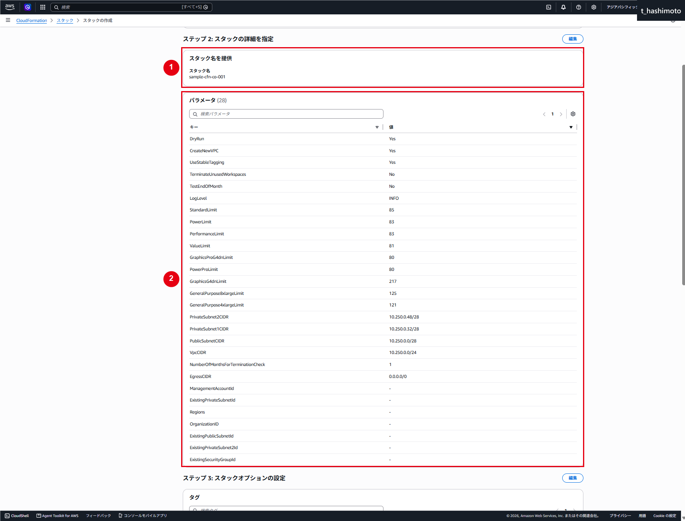
画像内の番号
- ① 作成対象のスタック名を確認する
- ② 28個のCloudFormationパラメータが今回の設定値と一致していることを確認する
- 画面下部へ移動し、「送信」を選択
作成中はCloudFormationのイベントで失敗がないことを確認する
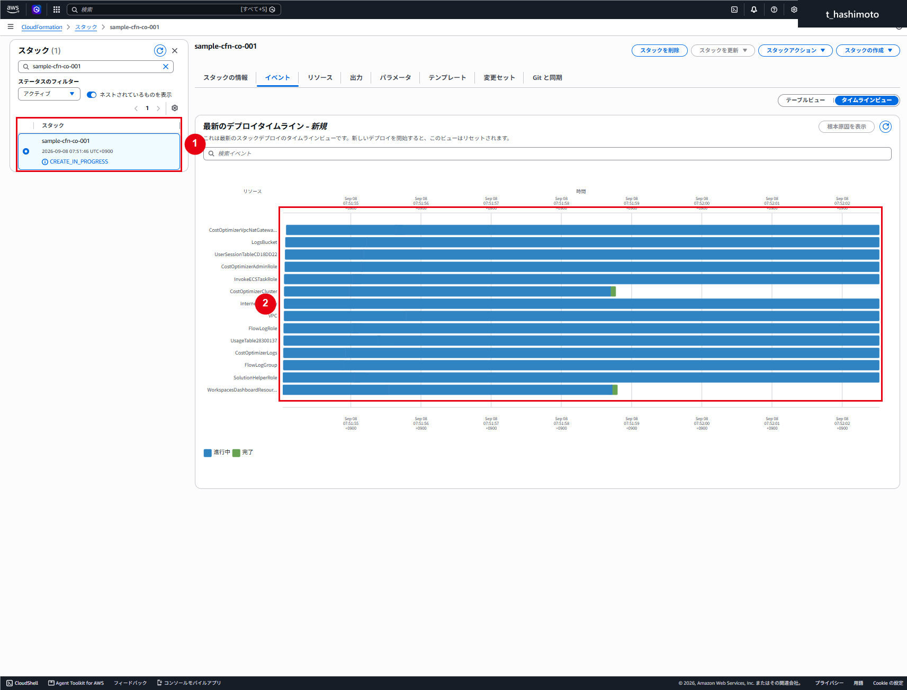
画像内の番号
- ① スタックの状態が
CREATE_IN_PROGRESSであることを確認する - ② イベントの進行状況に失敗やロールバックがないことを確認する
デプロイ結果を確認する
- スタックが
CREATE_COMPLETEであることを確認 - 「リソース」タブで、本構成では41件が
CREATE_COMPLETEであることを確認 - 「出力」タブで
SolutionVersion=v2.9.10、DryRun=Yes、BucketName、料金しきい値を確認 - 作成直後はダッシュボードが空でも異常とは限らない。初回ECSタスク実行後にS3、ログ、メトリクスを確認
画像内の番号
- ① S3、CloudWatch Logs、LambdaおよびIAM関連リソースが
CREATE_COMPLETEであることを確認する - ② EventBridge、ECSおよびVPC関連リソースが
CREATE_COMPLETEであることを確認する - ③ DynamoDBテーブルとCloudWatchダッシュボードが
CREATE_COMPLETEであることを確認する
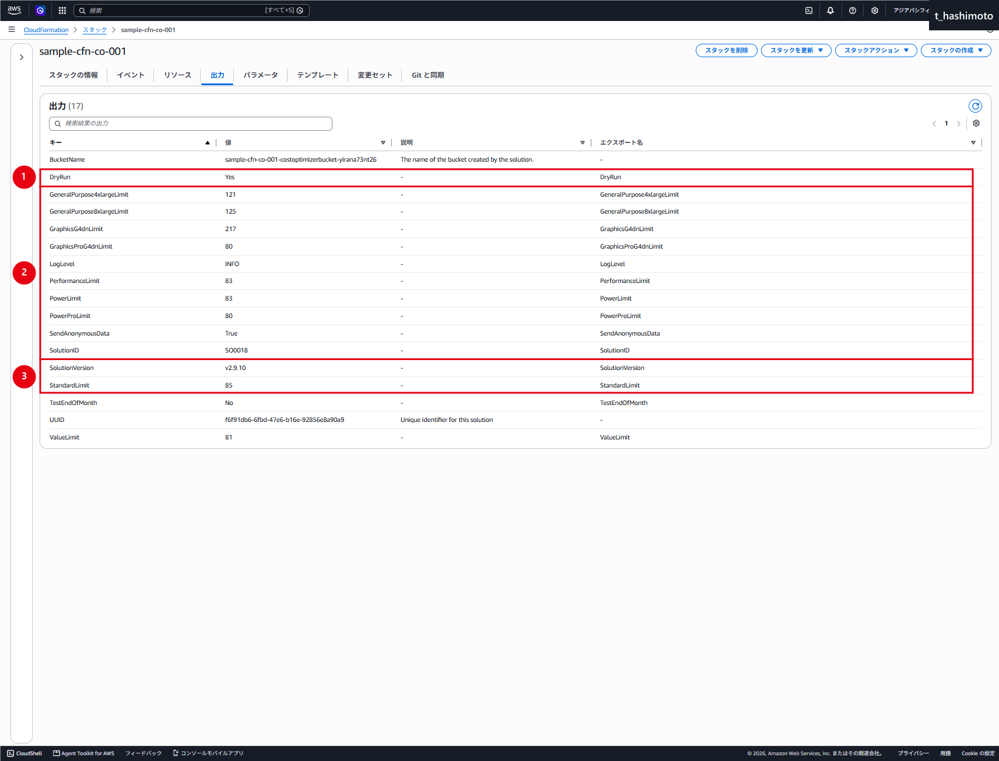
画像内の番号
- ① 出力値の
DryRun=Yesを確認する - ② 料金しきい値、ログレベルおよびSolution IDを確認する
- ③
SolutionVersion=v2.9.10とStandardLimit=85を確認する
作成後の注意
CreateNewVPC=YesではNAT GatewayとElastic IPが作成され、継続料金が発生する- スタック削除後も、削除ポリシー
RetainのS3、DynamoDB、CloudWatch Logsが残る - DryRun解除はデプロイ直後に実施せず、レポートを十分な期間確認してから行う
- 詳細は作成リソース一覧を参照する
レポート・監視手順
目次
概要
Cost Optimizerの日次処理について、ECSタスク、CloudWatch Logs、S3 CSVおよびCloudWatchダッシュボードを順に確認する。取得済み証跡はDry Run有効時の1台分であり、課金モードの実変更証跡ではない
本手順書で実施すること
- ECSタスクの停止理由と終了コードを確認する
- S3の日次CSVとCloudWatch Logsの処理内容を確認する
- ダッシュボードを補助情報として確認する
完了条件
- ✔ 対象実行のECSタスクが正常終了していること
- ✔ 対象日のS3 CSVが生成され、内容を開けること
- ✔ 対象リージョンのログに未解決のエラーがなく、実行パラメータを確認できること
設定値
| 項目 | 今回の設定値 |
|---|---|
| 確認対象スタック | sample-cfn-co-001 |
| 取得済みレポート | Dry Run有効時・1台分 |
| Dry Run解除後の結果 | 未確認 |
参考：AWS公式資料
出典：AWS公式：トラブルシューティングでは、S3レポートとECSログの確認方法が案内されている
確認対象
Cost Optimizerの1回の処理は、主に次の場所で確認する
| 確認先 | 確認内容 | 今回の確認先 |
|---|---|---|
| Amazon ECS | 起動したタスク、停止理由、終了コード | クラスター cost-optimizer-cluster |
| CloudWatch Logs | 読み込んだパラメータ、走査リージョン、処理結果、例外 | /ecs/wco-task/sample-cfn-co-001 |
| Amazon S3 | リージョン／ディレクトリ別CSV、集約CSV | sample-cfn-co-001-costoptimizerbucket-yirana73nt26 |
| CloudWatch dashboard | 台数、課金形態、変換、終了、失敗、処理時間 | sample-cfn-co-001-Dashboard-b3cb8f30-ab0e-11f1-b7e4-0e752dcc785b |
ECSタスクを確認する
- ECSで
cost-optimizer-clusterを開く - 「タスク」で対象時刻のタスクを選択
- タスクが停止済みであること、停止理由、コンテナ終了コードを確認
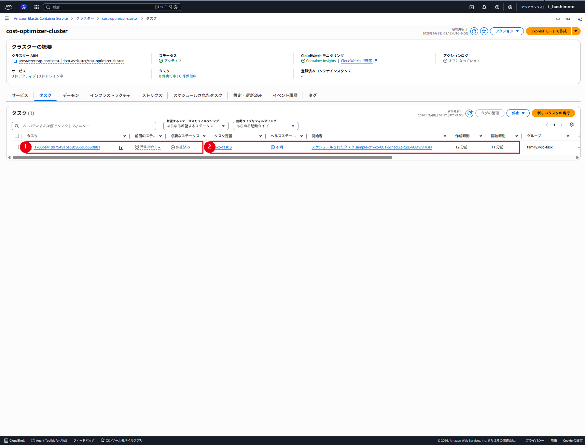
画像内の番号
- ① 対象日時のECSタスクと停止状態を確認する
- ② 使用したタスク定義のリビジョンと実行情報を確認する
CloudWatchダッシュボードを確認する
- CloudWatchの「ダッシュボード」を開く
sample-cfn-co-001-Dashboard-b3cb8f30-ab0e-11f1-b7e4-0e752dcc785bを選択- 対象期間を実行時刻が含まれる範囲に
- 総WorkSpaces数、Hourly／Monthly、DryRun／実変換、終了、失敗・スキップ、ECS処理時間を確認
取得済み証跡では総数1、Hourly 1、Monthly 0を確認しました。変換や終了がなければ該当ウィジェットが空になることは正常な状態
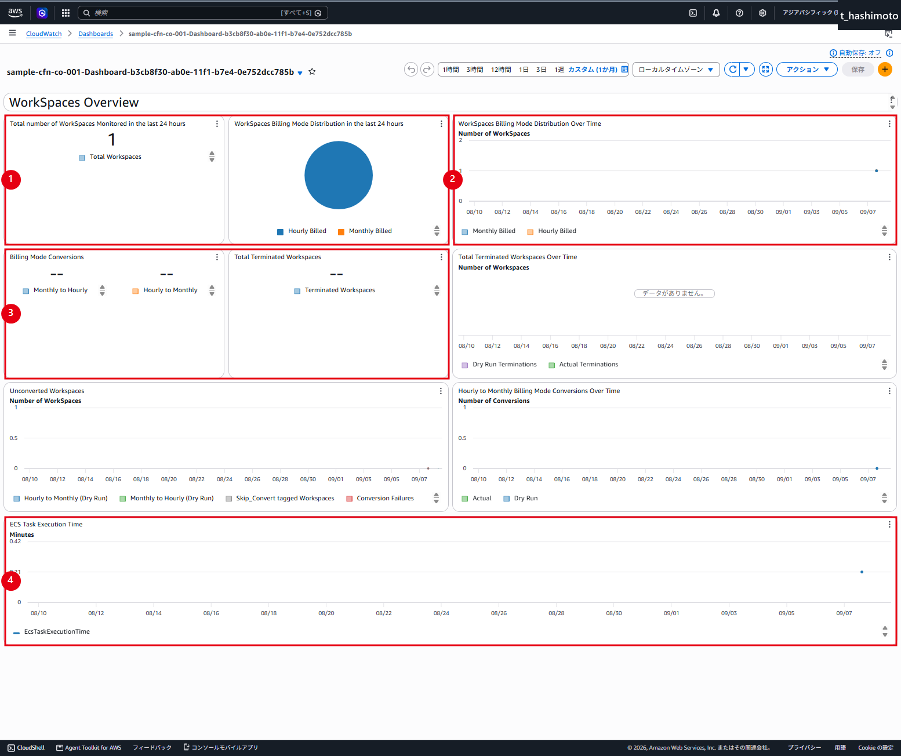
画像内の番号
- ① 監視対象総数と課金モード構成を確認する
- ② 課金モード構成の時系列を確認する
- ③ 課金モード変換および終了実績を確認する
- ④ ECSタスクの処理時間を確認する
S3レポートを確認する
- CloudFormationスタックの「出力」で
BucketNameを確認 - バケットを開き、
YYYY/MM/DD/の順に対象日を開く - 当日の処理で新規作成された集約版とリージョン／ディレクトリ別CSVを確認する。今回
DryRun=Yesの実行で確認した名称は、aggregated_dry-run_daily.csvと＜リージョン＞_＜アカウント＞_＜ディレクトリ＞_dry-run_daily.csv - CSVをダウンロードし、文字化けや列ずれがなく開けることを確認
取得済み証跡では2026/09/08/に、09:01 JST（00:01 UTC）付近で2種類のCSVが保存されました。運用確認では固定日付を使用せず、対象実行日と実際のECS終了時刻に対応するプレフィックスを確認する
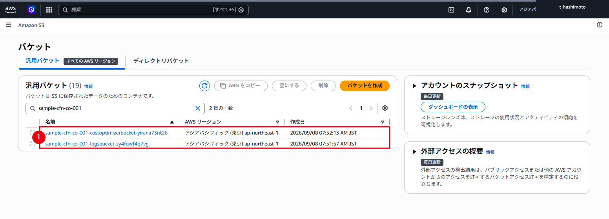
画像内の番号
- ① レポート用バケットとS3アクセスログ用バケットを区別して確認する
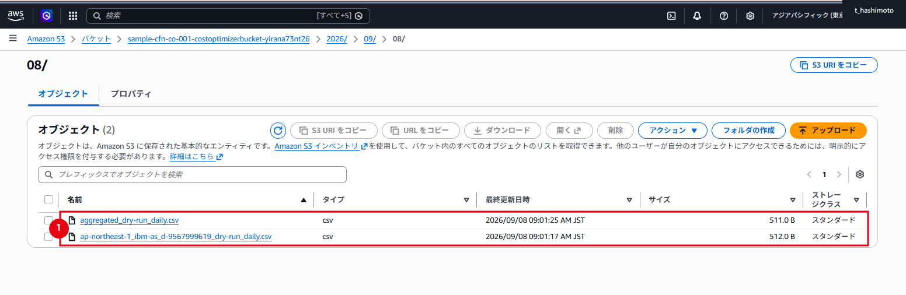
画像内の番号
- ① 集約版とリージョン・アカウント・ディレクトリ別のDry Run日次CSVを確認する
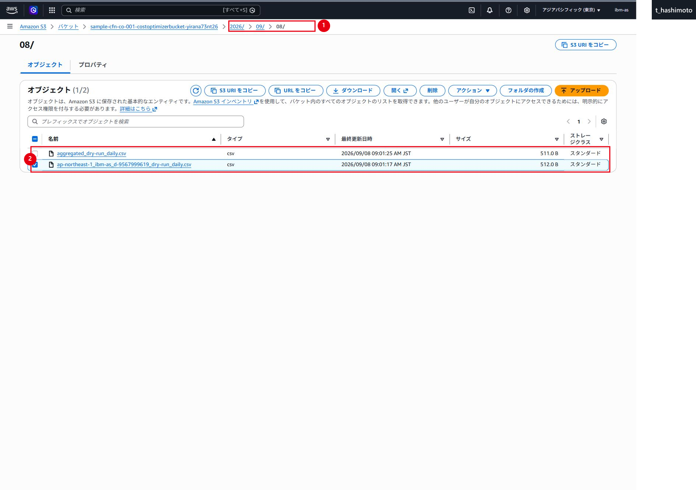
画像内の番号
- ① 対象日付のS3プレフィックスを確認する
- ② 対象実行で作成された2種類のCSVと更新時刻を確認する
注意：掲載証跡はDry Run有効時の結果
図4・図5および実測CSVは DryRun=Yes 時の1台分の結果である。DryRun=No へ変更した後の実変更結果ではありません
DryRun=No の実運用確認では、名称を決め打ちせず、対象日の実行時刻以降に作成されたCSVのファイル名と内容を確認する
CSVの主な列を確認する
| 列 | 見方 |
|---|---|
WorkspaceID |
対象WorkSpace ID |
Billable Hours |
当月の請求対象時間 |
Usage Threshold |
対象バンドルに適用したしきい値 |
Change Reported |
判定または変更内容。DryRun時は実変更を意味しない |
Initial Mode |
実行前の課金モード |
New Mode |
判定後の課金モード |
WorkspaceTerminated |
終了判定の結果 |
Tags |
除外タグ等の確認 |
ReportDate |
レポート対象日 |
DryRun=No の実行後はCSVだけで完了判定せず、WorkSpacesコンソールの課金モードも突合する。CSVに Failed to change mode 等がある場合は、同時刻のCloudWatch Logsを確認する
ダッシュボードの台数・変換結果を確認する
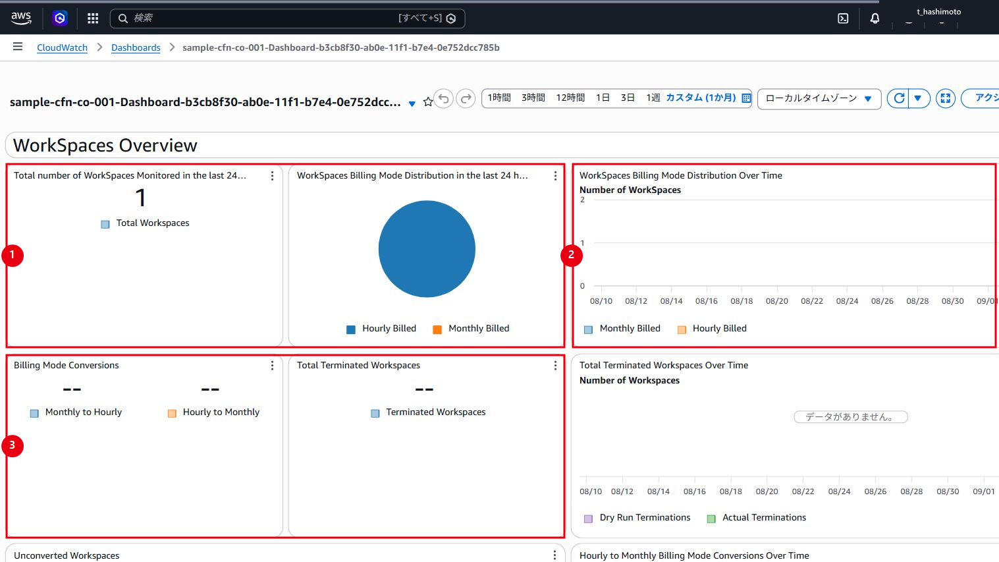
画像内の番号
- ① 監視対象総数と現在の課金モード構成を確認する
- ② 課金モード構成の時系列を確認する
- ③ 課金モード変換および終了実績を確認する
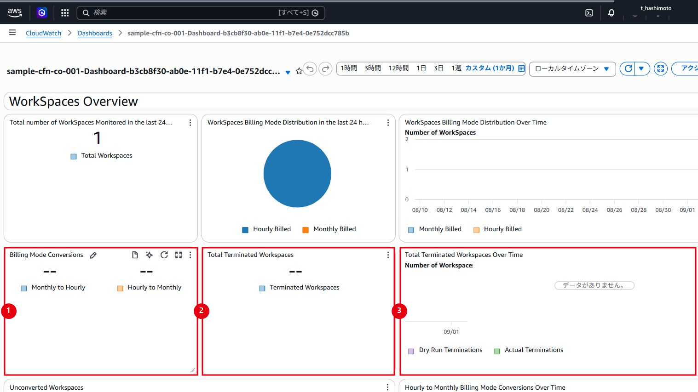
画像内の番号
- ① 課金モード変換件数を確認する
- ② 終了したWorkSpace数を確認する
- ③ Dry Runおよび実際の終了件数の時系列を確認する
CloudWatch Logsを確認する
- CloudWatchの「ロググループ」で
/ecs/wco-task/sample-cfn-co-001を開く - 実行時刻に対応するログストリームを開く
DryRun、料金しきい値、Regions、TerminateUnusedWorkspaces等が意図した値か確認ERROR、Exception、Traceback、AccessDenied、UnrecognizedClientException、Failed to change modeを検索- 対象リージョンの走査、WorkSpaces件数、CSV出力、完了ログを確認
ロググループの保持期間は365日
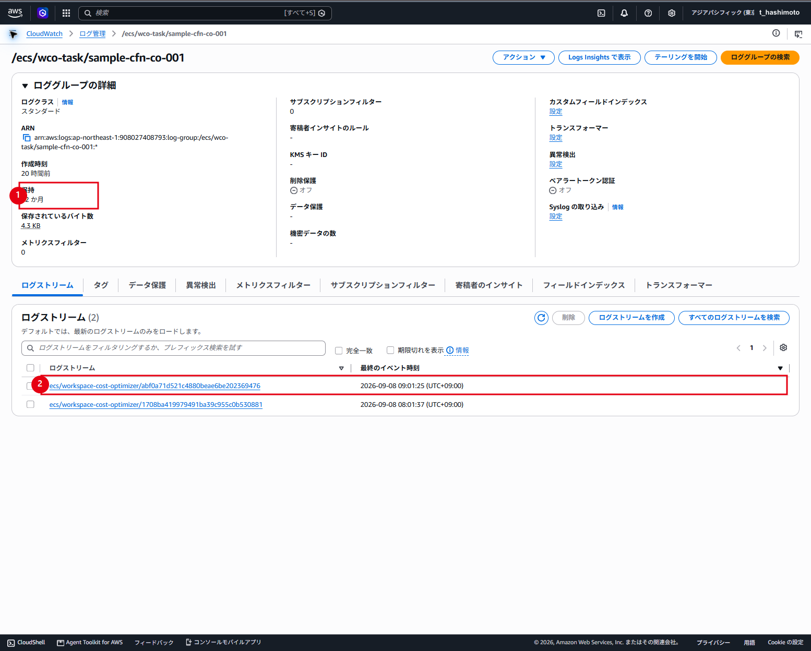
画像内の番号
- ① ロググループの保持期間が12か月であることを確認する
- ② 対象実行時刻のログストリームを選択する
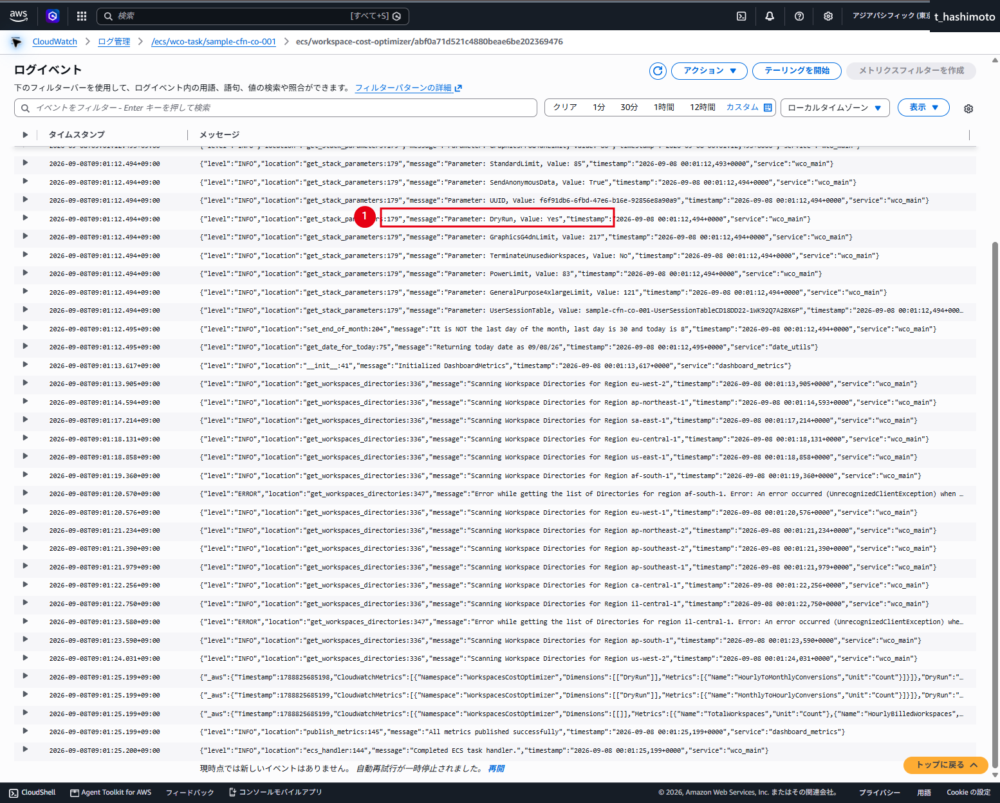
画像内の番号
- ① ログ上の
DryRun=Yesを確認する
取得済み証跡ではRegionsが空欄で、アカウントで未有効化のリージョンにUnrecognizedClientExceptionが記録されましたが、東京リージョンの処理とCSV出力は完了しました。運用範囲が決まっている場合は、CloudFormationパラメータRegionsに必要なリージョンのみを指定します。Failed to change modeがある場合はWorkSpace IDで同じログを検索し、状態や例外を確認する。次回の日次実行で再試行されるため、その結果も確認する
説明用5台サンプル
実測が1台であるため、説明用に架空の5台を記載したCSV・Excel・画像を同フォルダの説明用サンプルに保存しています。これはCloudWatchまたはお客様環境の実測値ではない
説明用サンプル_集約_dry-run_daily_5台.csv説明用サンプル_リージョン別_dry-run_daily_5台.csv説明用サンプル_5台_WorkSpacesCostOptimizer.xlsx参考図1_説明用サンプル_WorkSpacesCostOptimizer_5台.png参考図2_料金パラメータ比較_v2.8.1-v2.9.10.png
詳細は 説明用サンプル5台の見方 を参照する
参考：説明用サンプル5台の見方と使用範囲
目次
概要
Cost Optimizerが出力するCSVの列と複数台表示を説明するため、架空のWorkSpaces 5台を収録したCSV、ExcelおよびPNGの用途を整理します。実測1台の証跡とは分離して扱う
本手順書で実施すること
- 架空データと実測証跡を区別する
- CSV列、料金しきい値および課金モード判定の読み方を確認する
完了条件
- ✔ 説明用資料が架空データであることを明示していること
- ✔ 説明用資料をAWS実環境の成功証跡や削減実績として扱わないこと
設定値
| 項目 | 今回の設定値 |
|---|---|
| データ種別 | 架空5台 |
| 実測証跡 | 別フォルダのDry Run有効時・1台分 |
参考：AWS公式資料
出典：AWS公式：トラブルシューティングのレポート確認方法と併せて使用する
対象データ
本資料は、Cost Optimizer for Amazon WorkSpacesが出力するCSVの項目と、複数台を並べた場合の見方を説明するための補助資料
注意：説明用5台データは架空値
5台分のCSV、ExcelおよびPNGは、説明用に作成した 架空データ です。AWS環境から取得した実測値、CloudWatchメトリクス、S3出力原本または処理成功の証跡ではありません。今回取得した実測1台のCSV・画面証跡と混同しないでください
ファイル一覧と用途
説明用の架空データ
| ファイル名 | 内容 | 使用目的 |
|---|---|---|
説明用サンプル_リージョン別_dry-run_daily_5台.csv |
1リージョン分を想定した5台の架空明細 | リージョン別日次CSVの列構成を説明する |
説明用サンプル_集約_dry-run_daily_5台.csv |
5台の架空集約明細 | 集約日次CSVの列構成を説明する |
説明用サンプル_5台_WorkSpacesCostOptimizer.xlsx |
上記サンプルを読みやすく整理したExcel | 件数、使用時間、料金しきい値、明細の関係を説明する |
参考図1_説明用サンプル_WorkSpacesCostOptimizer_5台.png |
Excelの「概要」相当の説明画像 | 手順書へ掲載する5台サンプルの概要図 |
参考図2_料金パラメータ比較_v2.8.1-v2.9.10.png |
料金しきい値の比較画像 | お客様環境確認値と本手順書採用値の違いを説明する |
このサンプルは1リージョンを想定しているため、リージョン別CSVと集約CSVの5行は同じ内容です。複数リージョンまたはマルチアカウントの実環境では、集約結果がリージョン別結果と異なる場合がある
今回の実測証跡
| ファイル名 | 内容 | 使用目的 |
|---|---|---|
実測_リージョン別_dry-run_daily_1台.csv |
今回S3から取得した1台分のリージョン別日次レポート | 実際にレポートが生成・保存されたことを確認する |
実測_集約_dry-run_daily_1台.csv |
今回S3から取得した1台分の集約日次レポート | 実際の集約ファイル形式を確認する |
図2_CloudWatch_ダッシュボード_実績1台.png |
今回取得したCloudWatchダッシュボード | 実行後にメトリクスが表示される場所を説明する |
図4_S3_DryRun日次CSV出力確認.png |
今回取得したS3画面 | レポートの格納先とファイル生成を確認する |
実測1台の資料は実行証跡に使用できますが、1台だけの結果から複数バンドルの傾向、料金削減効果または全環境の動作を判断することはできない
Excelブックの見方
説明用サンプル_5台_WorkSpacesCostOptimizer.xlsx は、次の3シートで構成されている
「概要」シート
5台のサンプル全体を確認するシート
- 対象WorkSpaces：5台
- Billable Hours合計：184時間
- 変更報告数：0件
- Bundle Type別のBillable HoursとUsage Thresholdをグラフで比較
台数、合計時間、変更報告数は「サンプル明細」を参照する数式で計算されています。グラフはVALUE、STANDARD、PERFORMANCE、POWER、POWERPROの5種類を説明するためのもので、実環境のバンドル構成比を表すものではない
「料金パラメータ比較」シート
お客様環境で確認したv2.8.1の料金しきい値と、本手順書でv2.9.10へ設定した値を比較するシート
比較列は「手順書設定値」と表示しています。これは、2026年9月8日時点のAWS実装ガイドに掲載され、本手順書で採用した設定値です。v2.9.10配布テンプレート内の既定値とは同義ではありません。両者の差分は、参考_v2.8.1-v2.9.10差分.md を正として確認してください
このシートは料金しきい値の違いを説明するために使用します。実際の料金変更判断では、利用リージョンのAmazon WorkSpaces料金、お客様環境の使用状況、Dry Runレポートを別途確認する
「サンプル明細」シート
5台分のCSV列を横並びで確認するシートです。主な列は次のとおり
| 列 | 確認内容 |
|---|---|
WorkspaceID |
対象WorkSpace。サンプルでは ws-sample001 から ws-sample005 の架空ID |
Billable Hours |
当月の課金対象時間としてレポートされた値 |
Usage Threshold |
バンドル種別に対応する料金しきい値 |
Change Reported |
課金モード変更の判定結果 |
Initial Mode／New Mode |
判定前後の課金モード |
WorkspaceTerminated |
未使用WorkSpace終了機能による終了結果 |
| パフォーマンス関連列 | 遅延、CPU、メモリ、ディスク、UDPパケット損失率などの説明用値 |
WorkspaceType |
PRIMARY／STANDBYの識別 |
ReportDate |
レポート日付 |
サンプル5台はすべて Change Reported=No Change、Initial Mode=AUTO_STOP、New Mode=AUTO_STOP としています。これは列の読み方を説明するための設定であり、課金モード変更が実際に成功したことを示すものではない
実行結果を確認する際の注意
CloudWatchダッシュボードは、分析対象数、変更結果、コンテナ実行状況などを把握するための可視化画面です。作成直後やメトリクス送信前は空欄となる場合がある
処理成功の確認では、次の3点を併せて確認する
- ECSタスクが起動し、異常終了していないこと
- CloudWatch Logsの対象実行ログにエラーがないこと
- ソリューションが作成したS3バケットへ対象日のCSVレポートが保存されていること
CSVが作成されていても、各WorkSpaceの課金モードが変更されたとは限らない。Change Reported、Initial Mode、New Mode、および必要に応じてECSログを確認してください。変更失敗またはスキップがある場合は、日次レポートの結果とECSログの例外内容を照合する
設定変更・実行結果確認手順
目次
概要
CloudFormationスタックsample-cfn-co-001の変更セットを使用し、DryRunをYesからNoへ変更します。変更対象と置換有無を確認して実行した後、CloudFormation、ECS、CloudWatch Logs、S3 CSVおよびWorkSpaces実行モードの順に確認し、設定更新と日次処理の成功可否を判定します。取得済み証跡ではCloudFormation更新まで完了しており、Dry Run解除後の初回日次処理と課金モード変更結果は未確認
本手順書で実施すること
sample-cfn-co-001の変更前パラメータがDryRun=Yesであることを確認する- 現在のテンプレートから変更セットを作成し、
DryRun=Noへ変更する - 変更対象2リソースの差分と置換有無を確認して変更セットを実行する
UPDATE_COMPLETEと変更後のDryRun=Noを確認する- 次回日次実行のECSタスク、処理ログおよびS3 CSVを確認する
- CSVで変更が報告されたWorkSpaceの実行モードを突合する
完了条件
- ✔ CloudFormationスタックが
UPDATE_COMPLETEであること - ✔ 変更後パラメータとEventBridgeターゲットを確認できること
- ✔ ECSタスクの終了コードが0で、対象リージョンに未解決の処理エラーがないこと
- ✔ 対象日のS3 CSVが生成され、変更が報告された場合はWorkSpaces実行モードと一致すること
設定値
| 項目 | 今回の設定値 |
|---|---|
| Dry Run | YesからNoへ更新済み（取得済み証跡） |
| 未使用WorkSpace終了 | No |
| Dry Run解除後の実処理 | 未確認 |
参考：AWS公式資料
出典：AWS公式：ソリューションの更新。CloudFormation管理下のリソースを直接変更しない
変更方針
注意：同一バージョンのパラメータ変更とバージョン更新を分ける
v2.9.10の料金しきい値やDry Runだけを変更する場合は、現在のテンプレートを使用して変更セットを作成します。ソリューションのバージョンを更新する場合は、更新先バージョンの公式テンプレートを指定し、リリースノート、リソースの置換・削除、IAM差分および引き継ぐパラメータを確認する
料金しきい値とDryRunは、CloudFormationスタックsample-cfn-co-001のパラメータとして管理します。設定変更は CloudFormation変更セット を使用し、事前に差分を確認してから実行する
ECSタスク定義、EventBridge、IAM、S3等を直接編集するとCloudFormationの管理状態と実リソースに差分が生じるため、通常運用では行わない
DryRun解除の実施条件
DryRun=No にすると、以後の日次実行で判定条件を満たしたWorkSpaceの課金モード変更が実行されます。スタック更新直後に即時実行されるわけではない
本番環境では次を満たしてから解除する
- DryRunの日次・月次レポートを十分な期間（推奨は数か月）確認済み
- 料金しきい値と対象リージョンがお客様承認済み
- 自動変更対象から除外するWorkSpaceに
Skip_Convertタグを設定済み TerminateUnusedWorkspaces=Noを確認済みです。終了機能を利用する場合は別途承認する- 次回自動実行時刻と、同一UTC日内に実行済みでないことを確認済み
- 切り戻し手順と変更承認を確認済み
変更前の値を確認する
- CloudFormationで東京リージョンを選択
- スタック
sample-cfn-co-001を開く - 「パラメータ」または「出力」で、変更前が
DryRun=Yesであることを確認
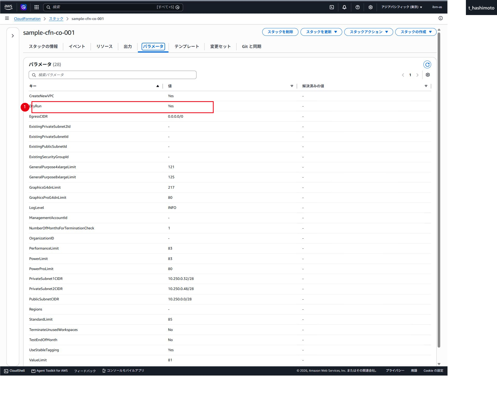
画像内の番号
- ① 変更前のCloudFormationパラメータが
DryRun=Yesであることを確認する
変更セットを作成する
- 「スタックアクション」から「現在のスタックの変更セットを作成」を選択
- テンプレートは「現在のテンプレートを使用」を選択し、「次へ」を選択
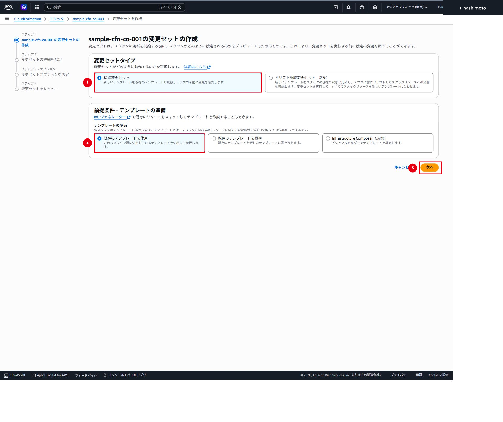
画像内の番号
- ① 既存スタックに対する変更セットを選択する
- ② 同一バージョンのパラメータ変更では現在のテンプレートを使用する
- ③ 「次へ」を選択する
Launch in Dry Run ModeをNoに変更Terminate unused workspaces=No、TestEndOfMonth=Noおよび他のパラメータが意図せず変わっていないことを確認
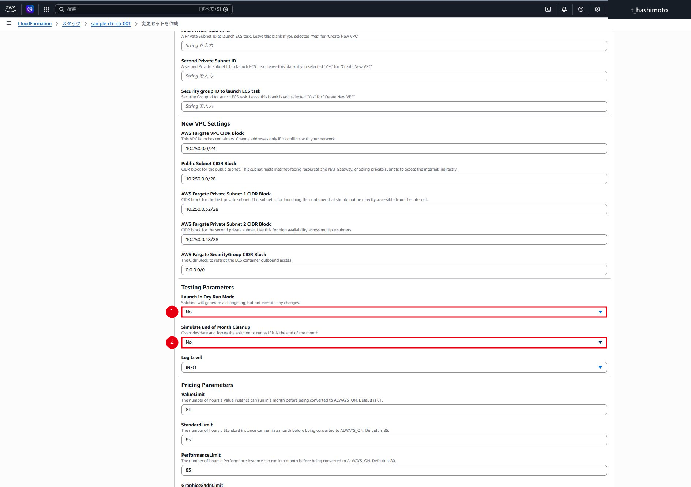
画像内の番号
- ①
Launch in Dry Run ModeをNoへ変更する - ②
Simulate End of Month Cleanup=Noを維持する
- 「プロビジョニング失敗時の動作」は「すべてのリソースをロールバック」と
- IAMリソースの作成に関する承認欄を確認
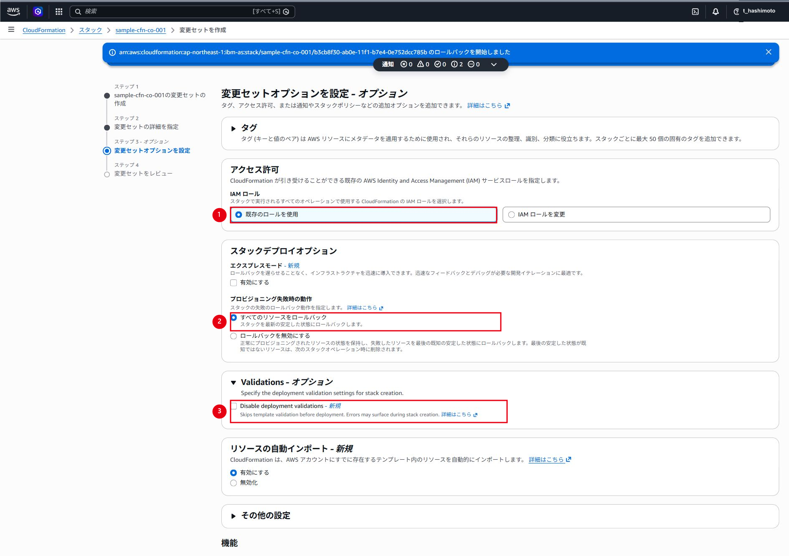
画像内の番号
- ① CloudFormationサービスロールの指定を確認する
- ② プロビジョニング失敗時にすべてのリソースをロールバックする設定を選択する
- ③ 検証オプションに意図しない変更がないことを確認する
差分を確認して実行する
- 変更セット名、説明、変更理由、承認者を記録
- 変更セットを作成
- 差分で
CostOptimizerTaskDefinitionの置換とScheduleRuleの更新を確認 - 意図しない削除・置換がないことを確認
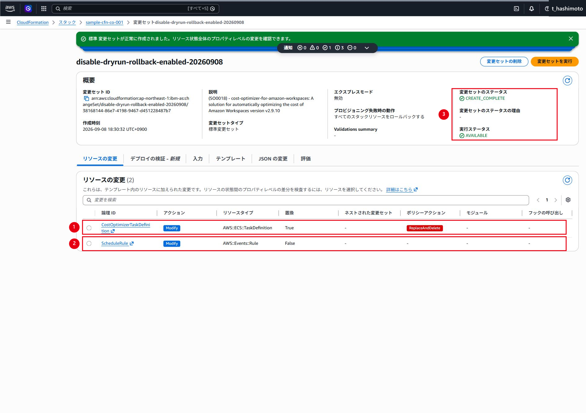
画像内の番号
- ①
CostOptimizerTaskDefinitionがModify、置換がTrue、ポリシーアクションがReplaceAndDeleteであることを確認する - ②
ScheduleRuleがModify、置換がFalseであることを確認する - ③ 変更セットが
CREATE_COMPLETE、実行ステータスがAVAILABLEであることを確認する
- 変更セットを実行し、ロールバック設定を最終確認
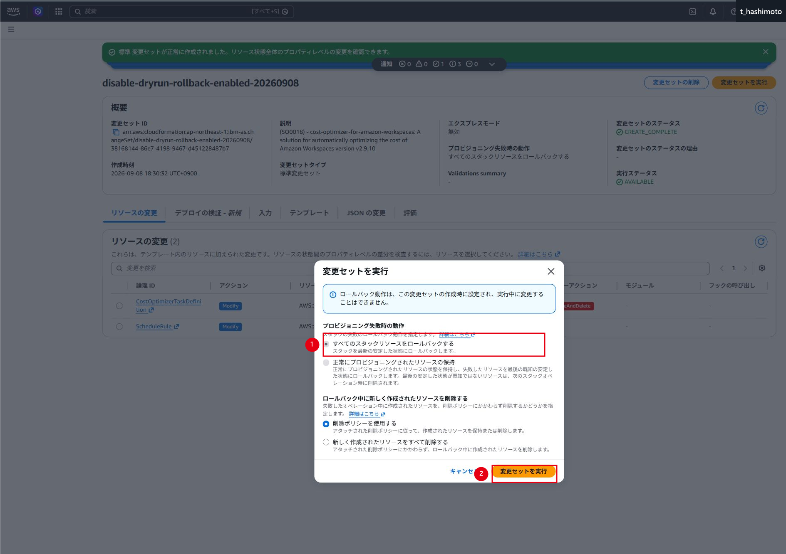
画像内の番号
- ① 実行時のロールバック動作を確認する
- ② 「変更セットを実行」を選択する
更新結果を確認する
- CloudFormationが
UPDATE_COMPLETEになるまで待機 - 失敗イベントがないことを確認
- 「パラメータ」または「出力」で
DryRun=Noを確認 - ECSタスク定義に新しいリビジョンが作成され、EventBridgeターゲットがそのリビジョンを参照していることを確認
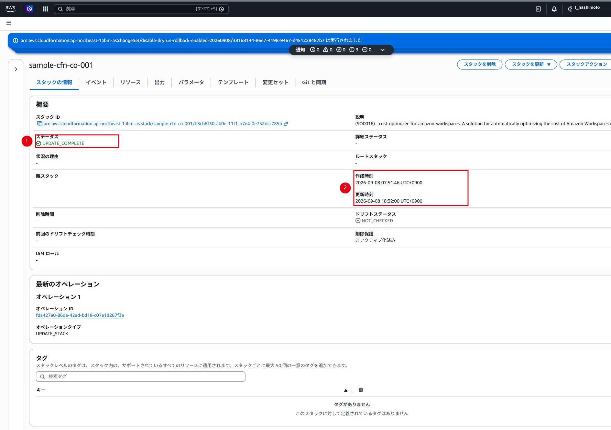
画像内の番号
- ① スタックの状態が
UPDATE_COMPLETEであることを確認する - ② 作成日時と最終更新日時を確認する
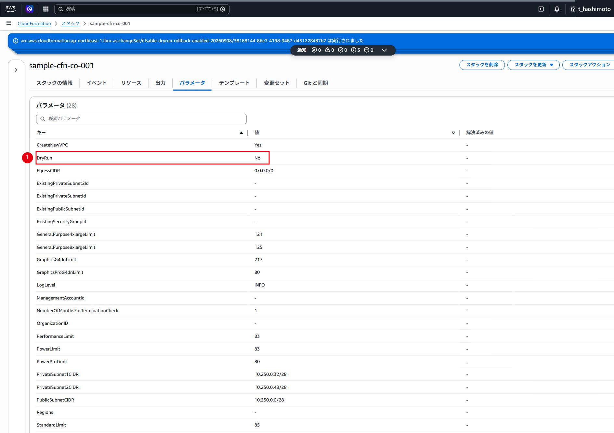
画像内の番号
- ① 変更後のCloudFormationパラメータが
DryRun=Noであることを確認する
取得済み証跡ではECSタスク定義がリビジョン3から4へ更新され、EventBridgeターゲットはwco-task:4を参照した
注意：タスク定義置換時はロールバックを有効にする
「プロビジョニング失敗時の動作」でロールバックを無効にした変更セットは、タスク定義の置換を含むため Replacement type updates not supported on stack with disable-rollback. で失敗した。スタックをロールバックし、ロールバック有効の変更セットを作り直して成功した。置換を含む更新ではロールバックを有効にする
設定変更後の成功可否を確認する
CloudFormationのUPDATE_COMPLETEは設定更新の成功を示しますが、日次処理や課金モード変更の完了を示すものではありません。次の5段階を順に確認する
| 段階 | 成功条件 | 確認できる内容 |
|---|---|---|
| 1. 設定更新 | CloudFormationがUPDATE_COMPLETE |
パラメータと関連リソースの更新に成功した |
| 2. タスク実行 | ECSタスクがSTOPPED、コンテナ終了コードが0 |
日次コンテナ処理が終了した |
| 3. 処理ログ | 完了ログがあり、対象リージョンに未解決のエラーがない | 読み込んだ設定値とWorkSpaceごとの処理結果 |
| 4. レポート | 対象日のS3 CSVが存在し、内容を開ける | 判定結果、変更報告および終了結果 |
| 5. 実リソース | CSVのNew ModeとWorkSpaces実行モードが一致 |
実際の課金モード変更結果 |
ECSタスクを確認する
- ECSで
cost-optimizer-clusterを開く - 対象のスケジュール実行時刻に対応するタスクを開く
- タスクが
STOPPEDであること、停止理由およびstopCodeを確認 - コンテナの終了コードが0であることを確認
終了コード0でも、一部リージョンやWorkSpaceの処理に失敗している可能性があるため、CloudWatch Logsまで確認する。取得済みのタスク一覧は、レポート・監視手順の「ECSタスクを確認する」を参照する
CloudWatch Logsを確認する
- ロググループ
/ecs/wco-task/sample-cfn-co-001を開く - 対象実行のログストリームを開く
DryRun、料金しきい値、Regions、TerminateUnusedWorkspacesおよびTestEndOfMonthが変更後の値であることを確認ERROR、Exception、Traceback、AccessDeniedおよびFailed to change modeを検索- 対象リージョンの走査、対象台数、レポート出力および処理完了を確認
Failed to change modeがある場合は、該当WorkSpace IDでログを絞り込み、WorkSpaceの状態と例外を確認する。次回の日次実行で再試行された結果まで確認してください。取得済みログは、レポート・監視手順の「CloudWatch Logsを確認する」を参照する
S3 CSVを確認する
- レポート用S3バケットを開く
YYYY/MM/DD/配下に対象日の日次CSVが生成されていることを確認- 集約CSVとリージョン・ディレクトリ別CSVを開く
WorkspaceID、Billable Hours、Usage Threshold、Change Reported、Initial Mode、New Mode、WorkspaceTerminatedおよびReportDateを確認- 対象WorkSpace数とログに記録された処理件数が一致することを確認
DryRun=YesのCSVは実行した場合の判定結果であり、実変更の証跡ではありません。DryRun=NoのCSVで変更が報告された場合は、WorkSpacesコンソールまで確認する。取得済みの日次CSVは、レポート・監視手順の「S3レポートを確認する」を参照する
WorkSpacesの実行モードを確認する
- WorkSpacesコンソールで、CSVの
WorkspaceIDを検索 - 対象WorkSpaceの実行モードを確認
- CSVの
New Modeと一致することを確認 Initial Mode、New Mode、確認日時および確認者を記録
更新対象が0件でも、利用時間と料金しきい値の判定結果として正常な場合があります。CSVで変更対象が0件であることと、ログに未解決のエラーがないことを確認して判定する
CloudWatchダッシュボードを補助確認する
監視対象総数、時間課金・月額課金の台数、課金モード変換件数、終了件数、失敗・スキップ件数およびECSタスク処理時間を確認する。ダッシュボードは全体傾向を確認する補助資料であり、単独では成功判定に使用しない
ドリフト確認の補足
取得済みのCloudFormationドリフト検出では、CostOptimizerTaskDefinitionがMODIFIEDでした。差分は、単一アカウント構成でテンプレートに空文字として定義されたSpokeAccountDynamoDBTable環境変数が、ECS側では未設定となっている内容
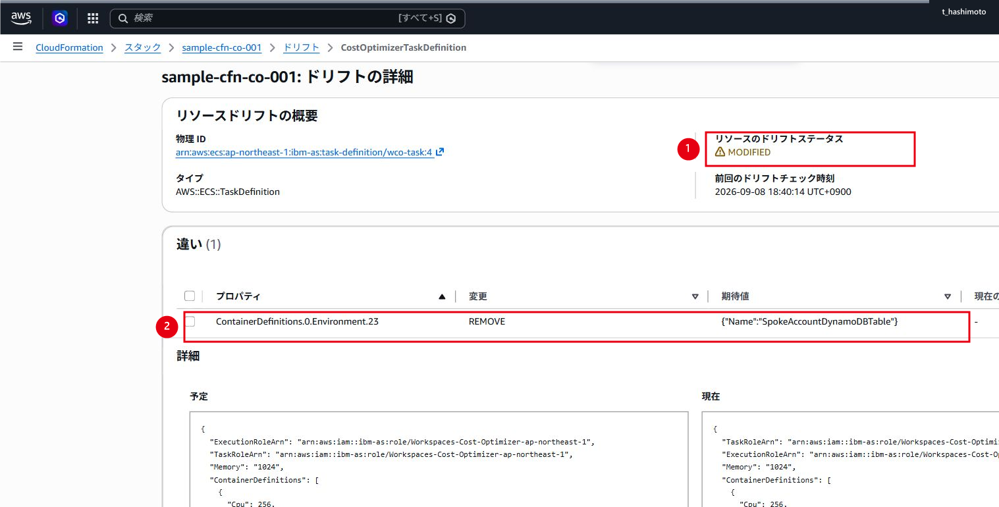
画像内の番号
- ① ECSタスク定義のドリフト状態が
MODIFIEDであることを確認する - ②
SpokeAccountDynamoDBTable環境変数が期待値では空文字、現在値では未設定となっている差分を確認する
これは取得済み証跡の範囲では実行時刻変更によるドリフトではありません。ただし、EventBridgeルールなどCloudFormation管理下のリソースを直接変更した場合は、現在の状態を改めてドリフト検出してください
料金しきい値を変更する場合
手順3～6と同様に、変更する料金パラメータだけを新しい値へ変更します。それ以外は既存値を維持する
- AWSの最新料金とWorkSpacesの利用実績から、損益分岐となる時間を算出
- 変更前後の値、根拠、対象リージョン、承認者を記録
- 変更セットで差分を確認
UPDATE_COMPLETEと出力値を確認- 次回実行のログとCSVに新しいしきい値が記録されることを確認
切り戻し
設定を戻す場合も、直前の値を入力した新しい変更セットを作成し、差分確認後に実行します。緊急時にDryRun=Yesへ戻しても、すでに実行済みの課金モード変更は自動的には元へ戻りません。終了済みWorkSpaceも復元されません。課金モードはWorkSpacesコンソールで個別に確認し、必要な変更は承認後に実施する
取得済み証跡の判定
| 確認項目 | 状態 | 根拠 |
|---|---|---|
| v2.9.10デプロイ | 完了 | 41リソースがCREATE_COMPLETE、出力がSolutionVersion=v2.9.10 |
| Dry Run解除 | 完了 | CloudFormationがUPDATE_COMPLETE、パラメータがDryRun=No |
| 変更前のDry Run処理 | 完了 | S3 CSV、CloudWatch Logsおよびダッシュボードを確認 |
| Dry Run解除後の初回処理 | 未確認 | 証跡取得時点では二重実行防止のためEventBridgeルールを一時無効化 |
| 課金モードの実変更 | 未確認 | 次回の日次実行後にCSVとWorkSpaces実行モードの突合が必要 |
参考 実行時刻変更の検証記録と本番変更方針
目次
概要
取得済み証跡に残るEventBridge実行時刻の一時変更を、検証記録として整理します。AWS公式はスケジュール変更と1日複数回実行を避けるよう案内しているため、本番標準手順ではなく例外時の判断材料として扱う
本手順書で実施すること
- 取得済みの09:00、06:00および08:00 JSTの変更記録を確認する
- 本番で変更が不可欠な場合の承認、テンプレート変更および変更セット手順を示する
- 再有効化後の初回実行を未確認として分離する
完了条件
- ✔ UTCとJSTの変換、Cron式および次回トリガーを作業直前に確認すること
- ✔ 同一UTC日内の重複実行を発生させないこと
- ✔ AWS Support確認とお客様承認なしに本番時刻を変更しないこと
設定値
| 項目 | 今回の設定値 |
|---|---|
| 日次実行時刻 | 08:00 JST／cron(0 23 * * ? *)へ復元 |
| EventBridgeルール | 2026年9月8日の証跡取得時点では一時無効 |
参考：AWS公式資料
出典：AWS公式：機能と利点では、スケジュールを変更せず1日1回だけ実行するよう案内されている
重要事項
AWS公式ドキュメントでは、Cost OptimizerのEventBridgeルール設定を変更したり、ECSタスクを手動実行したりしないよう明記されています。1日複数回実行すると、請求対象時間および課金モード変換の判定が不正確になる可能性があるため
本章のEventBridge直接編集は、画面および動作を確認するために今回一時的に実施した記録。本番環境の標準手順として実施しない
本番環境で例外的な時刻変更が不可欠な場合は、まずAWS Supportへ仕様影響を確認し、お客様のリスク承認を取得します。承認後はCloudFormationテンプレート内のScheduleExpressionを修正し、CloudFormation変更セットを使用して反映します。これにより、テンプレートと実リソースの差分（ドリフト）を防止する
検証した時刻と最終状態
EventBridgeのCron式はUTCで指定する
| 時系列 | 用途 | 日本時間 | UTC | Cron式 | 結果 |
|---|---|---|---|---|---|
| 1 | 検証開始時の設定 | 毎日09:00 | 毎日00:00 | cron(0 0 * * ? *) |
変更前の状態を確認 |
| 2 | お客様環境の設定値 | 毎日06:00 | 毎日21:00 | cron(0 21 * * ? *) |
入力・更新・反映を確認 |
| 3 | 今回の復元先 | 毎日08:00 | 毎日23:00 | cron(0 23 * * ? *) |
入力・更新・反映を確認 |
| 4 | 二重実行回避 | - | - | cron(0 23 * * ? *)を保持 |
ルールを一時的に無効化 |
2026年9月8日時点の最終状態は、Cron式がcron(0 23 * * ? *)、EventBridgeルールが「無効」、CloudFormationパラメータがDryRun=Noです。Cron式は今回の復元先へ戻っていますが、ルールを再有効化するまでスケジュール実行は開始されない
取得済みの直接編集記録
検証開始時の確認
検証開始時はcron(0 0 * * ? *)であり、00:00 UTC、すなわち09:00 JSTの設定でした。これは今回の復元先である08:00 JSTとは異なる
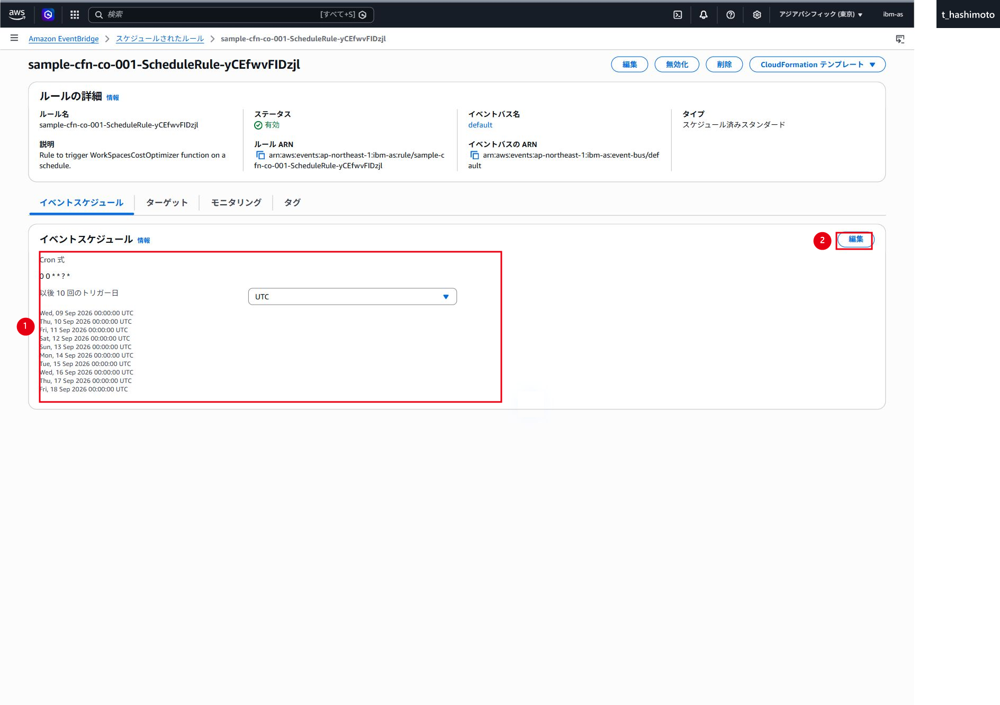
画像内の番号
- ① 取得時点のCron式と次回トリガーを確認する
- ② 変更操作を開始する「編集」を確認する
お客様環境の06:00 JSTを検証
「特定の時刻」を選択し、時間へ21を入力します。画面上のCron式が0 21 * * ? *、次回トリガーが21:00 UTCであることを確認して「次へ」を選択する

画像内の番号
- ① 「特定の時刻」を選択する
- ② 06:00 JSTに対応する時間
21を含むCron式を確認する - ③ タイムゾーンがUTCで、次回トリガーが21:00 UTCであることを確認する
- ④ 「次へ」を選択する
ターゲットがECSタスク、クラスターがcost-optimizer-cluster、タスク定義がwco-task、リビジョンが4であることを確認する。時刻以外の設定は変更しない
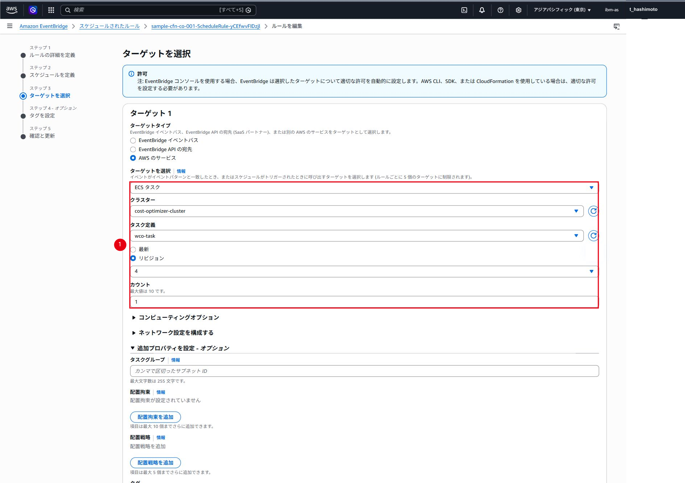
画像内の番号
- ① ターゲット種別、ECSクラスター、タスク定義のリビジョンおよびタスク数を確認する
確認画面でCron式とターゲットを再確認する
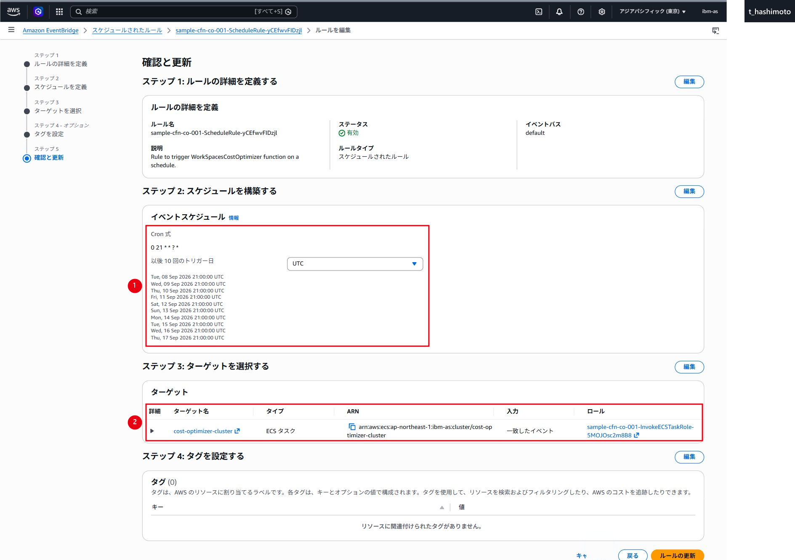
画像内の番号
- ① 06:00 JSTに対応するCron式と次回トリガーを再確認する
- ② ECSターゲットの設定を再確認する
確認後、画面下部までスクロールし、「ルールの更新」を選択する
更新成功メッセージ、0 21 * * ? *および21:00 UTCの次回トリガー一覧を確認した
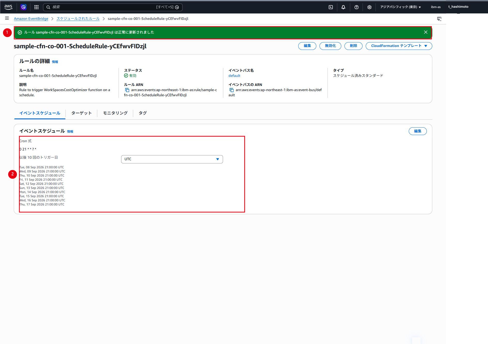
画像内の番号
- ① ルール更新の成功メッセージを確認する
- ② 06:00 JSTに対応するCron式と次回トリガーが反映されたことを確認する
今回の復元先である08:00 JSTへ戻す
時間を23へ変更し、Cron式が0 23 * * ? *、次回トリガーが23:00 UTCであることを確認する
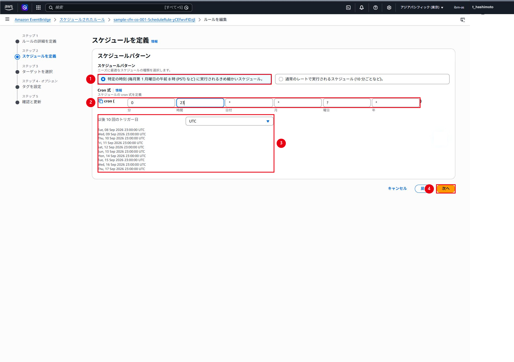
画像内の番号
- ① 「特定の時刻」を選択する
- ② 08:00 JSTに対応する時間
23を含むCron式を確認する - ③ タイムゾーンがUTCで、次回トリガーが23:00 UTCであることを確認する
- ④ 「次へ」を選択する
確認画面でCron式とターゲットを再確認する
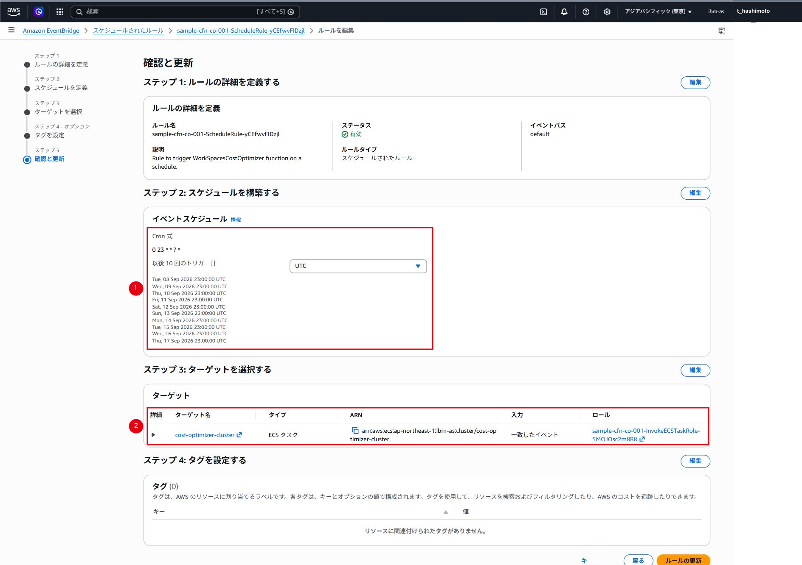
画像内の番号
- ① 08:00 JSTに対応するCron式と次回トリガーを再確認する
- ② ECSターゲットの設定を再確認する
確認後、画面下部までスクロールし、「ルールの更新」を選択する
更新成功メッセージ、0 23 * * ? *および23:00 UTCの次回トリガー一覧を確認した
画像内の番号
- ① ルール更新の成功メッセージを確認する
- ② 08:00 JSTに対応するCron式と次回トリガーが反映されたことを確認する
UTC同日内の二重実行を回避
検証当日は実行時刻を複数回変更したため、同一UTC日内に複数回起動しないようEventBridgeルールを一時的に無効化しました。無効化後もCron式は0 23 * * ? *のまま保持されている
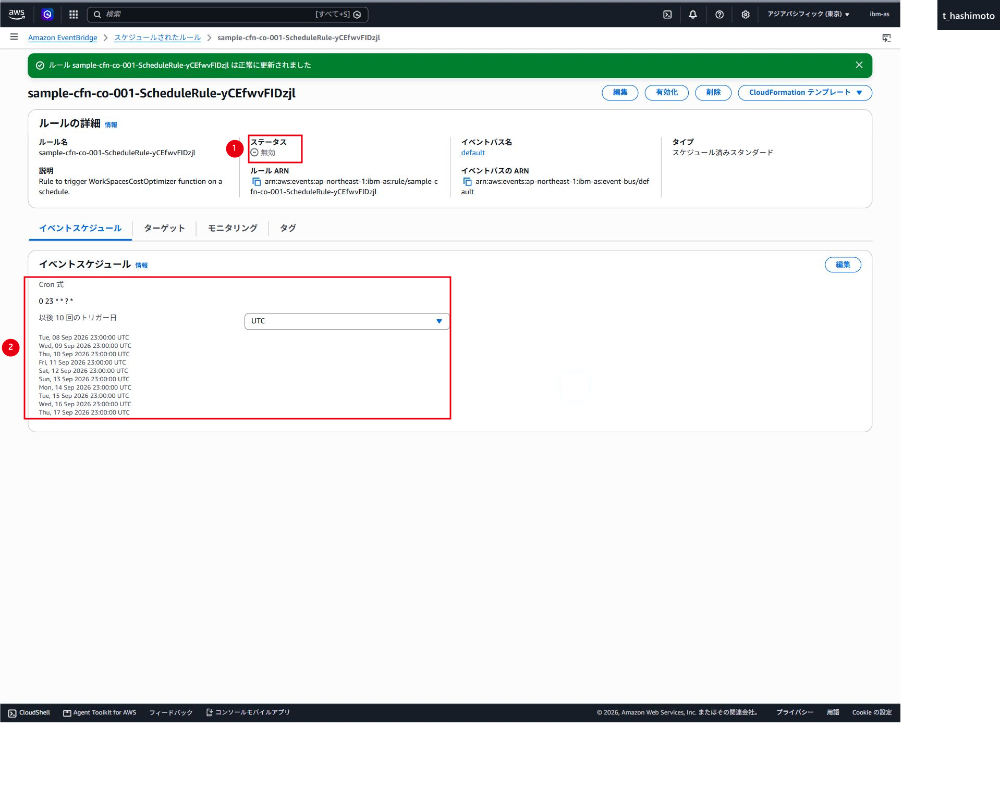
画像内の番号
- ① ルールの状態が無効であることを確認する
- ② 無効化後も08:00 JSTに対応するCron式が保持されていることを確認する
再有効化と初回実行確認
EventBridgeルールは、前回実行と次回実行が同一UTC日にならない時刻に再有効化します。再有効化後は、次回トリガーのUTCとJSTを換算し、想定した日付・時刻であることを確認してください
- Amazon EventBridgeの「スケジュールされたルール（レガシー）」を開く
sample-cfn-co-001-ScheduleRule-で始まる対象ルールを選択- Cron式が
0 23 * * ? *であることを確認 - 「有効化」を選択
- ステータスが「有効」になったことを確認
- 次回トリガーのUTCとJSTを換算し、想定した日付・時刻であることを確認
- 追加の手動実行は行わず、初回スケジュール実行を待機
- 実行後、ECSタスク、CloudWatch Logs、S3レポートおよびCloudWatchダッシュボードを確認
例外的カスタマイズとして変更する場合
AWS Supportの確認とお客様承認を得て本番時刻を例外的に変更する場合は、EventBridgeルールを直接編集せず、次の手順で変更する
- AWS Supportの回答、変更理由、想定影響およびお客様承認を記録
- 対象スタックと使用中のCloudFormationテンプレートのバージョンを確認
- テンプレート内の
ScheduleExpressionだけを目的のCron式へ変更 - 対象スタックの更新画面で変更後テンプレートを指定し、変更セットを作成
- 変更セットを確認し、EventBridgeルールの予定した変更以外に、削除、置換または意図しない変更がないことを確認
- 作業承認後に変更セットを実行
- スタックが
UPDATE_COMPLETEになったことを確認 - EventBridgeルールのCron式、有効状態および次回トリガーを確認
- 初回実行後、ECSタスク、CloudWatch Logs、S3レポートおよびCloudWatchダッシュボードを確認
時刻を元に戻す場合も、ScheduleExpressionを戻したテンプレートから変更セットを作成し、同じ確認手順で反映する
運用上の注意
- Cost Optimizerは1日1回の実行を前提とする
- 同一UTC日内にスケジュール実行と手動実行を重複させない
- 時刻変更の動作確認を目的としてECSタスクを手動実行しない
- 時刻を前後させる場合は、変更前後の次回トリガーを比較し、同一UTC日内に2回実行されない切替日時を選定する
DryRun=Noでは実際の課金モード変更が発生し得るため、再有効化前に対象WorkSpaces、料金閾値および除外タグを確認する
参考：お客様環境 v2.8.1 と本手順書 v2.9.10 の差分
目次
概要
お客様環境で確認されたv2.8.1と、今回の手順・証跡で使用したv2.9.10について、テンプレート、料金しきい値、コンテナイメージおよび更新時の相違点を整理する
本手順書で実施すること
- バージョン固有の差分と環境固有の設定値を分けて比較する
- 更新時に引き継ぐ値と再確認する値を明確にする
完了条件
- ✔ v2.8.1とv2.9.10の差分根拠を公式CHANGELOGまたは固定版テンプレートで確認できること
- ✔ 本番環境値、今回の設定値およびテンプレート既定値を混同していないこと
設定値
| 項目 | 今回の設定値 |
|---|---|
| ソリューションバージョン | v2.9.10 |
| 料金しきい値 | 後掲のv2.9.10配布テンプレート値および現行ガイド掲載値を参照 |
参考：AWS公式資料
出典：AWS公式GitHub：v2.8.1とv2.9.10の比較を差分根拠として使用する
対象データ
お客様環境で確認した Cost Optimizer for Amazon WorkSpaces v2.8.1 と、本手順書で構築・検証した v2.9.10 の差分を整理する
- 比較確認日：2026年9月8日
- お客様環境：v2.8.1
- 本手順書の対象：v2.9.10
- 比較対象：AWS公式CHANGELOG、GitHubタグ間比較、各バージョンの公式配布ハブテンプレート
注意：バージョン差分と環境設定値を分ける
「バージョン更新によるテンプレート仕様の差分」「お客様環境に保存されているパラメータ値」「本手順書で採用した設定値」は別のものです。本資料では、この3種類を区別して記載する
差分の要約
| 確認項目 | v2.8.1 | v2.9.10 | 判定 |
|---|---|---|---|
| ハブテンプレートのパラメータ定義数 | 26 | 28 | v2.9.0の機能追加に伴い2個増加 |
| ハブテンプレートの論理リソース定義数 | 48 | 48 | 追加・削除なし |
| 検証スタックで実際に作成されたリソース数 | ― | 41 | 単一アカウント、CreateNewVPC=Yes の検証結果 |
主な機能差分は、v2.9.0で追加された GeneralPurpose.4xlarge および GeneralPurpose.8xlarge のWorkSpacesバンドル対応です。v2.9.1では旧データとの互換性に関する不具合が修正され、v2.9.2からv2.9.10までは主として依存ライブラリ、コンテナベースイメージおよび脆弱性への対応が継続されている
論理リソース数が同じでも、設定内容が同一という意味ではありません。ECSタスク定義、コンテナイメージ、IAM定義、CloudWatchダッシュボードのタグなどには更新がある
バージョン別の主な変更
| バージョン | AWS公式CHANGELOGの主な内容 | 本手順書での扱い |
|---|---|---|
| v2.8.1 | DockerfileのPythonベースイメージを更新し、パッケージ脆弱性へ対応 | お客様環境の比較基準 |
| v2.9.0 | GeneralPurpose.4xlarge／8xlarge対応、運用メトリクス収集と文書の更新、DockerベースイメージをDebian 12から13へ更新、複数の依存関係・脆弱性修正 | 新しい2種類の料金しきい値を追加して説明する |
| v2.9.1 | v2.7.xからv2.9.0へ更新した際、既存DynamoDBレコードに workspace_type がないことで発生する KeyError を修正 |
旧データを保持して更新する場合の互換性修正として記載する。v2.8.1固有の不具合とは断定しない |
| v2.9.2～v2.9.7 | OpenSSL、urllib3、aws-cdk-lib、Pythonベースイメージ、idna、fast-uri、js-yaml、pytestなどを更新 |
主として保守・セキュリティ更新 |
| v2.9.8 | aws-cdk-lib と推移的依存関係を更新し、非推奨の addDependency を addResourceDependency へ変更 |
構築コードの保守性・セキュリティ改善 |
| v2.9.9 | js-yamlを更新し、脆弱性へ対応 | セキュリティ更新 |
| v2.9.10 | aws-cdk-lib を2.265.0へ更新し、brace-expansionに関する脆弱性へ対応 |
本手順書で確認したリリース |
CloudFormationパラメータの差分
v2.9.0で追加されたパラメータ
v2.8.1の26パラメータに対し、v2.9.10では次の2パラメータが追加され、合計28パラメータになっている
| 追加パラメータ | v2.9.10テンプレート内の既定値 | 用途 |
|---|---|---|
GeneralPurpose4xlargeLimit |
121時間 | GeneralPurpose.4xlargeを ALWAYS_ON へ切り替える月間使用時間の判定値 |
GeneralPurpose8xlargeLimit |
125時間 | GeneralPurpose.8xlargeを ALWAYS_ON へ切り替える月間使用時間の判定値 |
既存26パラメータは、v2.8.1とv2.9.10の公式配布テンプレートを比較した範囲で、Parameters に定義された既定値に変更はない
テンプレート内の既定値と現行ガイド掲載値
料金しきい値には、次の2種類の値があるため注意してください
- 配布テンプレート既定値：CloudFormationテンプレートの
Parametersに埋め込まれた値 - 現行AWS実装ガイド掲載値：確認日時点でAWS実装ガイドのパラメータ表に掲載されている値。本手順書の設定例として使用
| 料金パラメータ | v2.8.1配布テンプレート | v2.9.10配布テンプレート | 現行AWS実装ガイド掲載値（2026年9月8日確認） |
|---|---|---|---|
ValueLimit |
81 | 81 | 81 |
StandardLimit |
85 | 85 | 85 |
PerformanceLimit |
80 | 80 | 83 |
GraphicsG4dnLimit |
334 | 334 | 217 |
GraphicsProG4dnLimit |
80 | 80 | 80 |
PowerLimit |
92 | 92 | 83 |
PowerProLimit |
78 | 78 | 80 |
GeneralPurpose4xlargeLimit |
― | 121 | 121 |
GeneralPurpose8xlargeLimit |
― | 125 | 125 |
したがって、Performance 83、Graphics.g4dn 217、Power 83、PowerPro 80は、v2.9.10への更新だけで自動的に変わるテンプレート既定値ではありません。本手順書では、現行AWS実装ガイドを基にCloudFormationへ明示的に設定する値として扱う
既存スタックの更新時に「現在の値を使用」を選択したパラメータは、既存値が引き継がれます。料金しきい値を変更する場合は、CloudFormation変更セットでECSタスク定義などへの影響を確認し、承認後に反映してください
リソース数の見方
公式テンプレートは両バージョンとも48件
v2.8.1とv2.9.10の公式配布ハブテンプレートには、それぞれ48件の論理リソースが定義されている
- 追加された論理リソース：なし
- 削除された論理リソース：なし
- 更新された主な内容：ECSタスク定義、コンテナイメージ、料金しきい値の環境変数、IAM定義、依存ライブラリ、CloudWatchダッシュボードのソリューションタグ
今回41件となった理由
今回のスタック sample-cfn-co-001 は、ハブテンプレートのみを使用した単一アカウント構成で、CreateNewVPC=Yes として作成しました。OrganizationID と ManagementAccountId を空欄にしたため、マルチアカウント条件に依存する次の7件は作成されない
- スポークアカウント登録用DynamoDBテーブル
- DynamoDB Gateway Endpoint
- ECSタスク用DynamoDBアクセス権限
- スポーク登録Lambda実行ロール
- スポーク登録Lambdaポリシー
- スポーク登録Lambda関数
- スポーク登録Lambda呼び出し権限
このため、実際の作成数は 48件－7件＝41件 です。41件はv2.9.10全構成で固定される件数ではありません。既存VPC利用、マルチアカウント構成、テンプレート更新などにより作成数は変わるため、各環境ではCloudFormationスタックの「リソース」タブを正として確認する
コンテナイメージ自動更新の注意
Auto-update Container Image（テンプレート上の UseStableTagging）を Yes にすると、次のマイナーバージョンへ移行するまで、同一マイナーバージョンのstableタグが使用される
| バージョン | 固定リリースタグ | Auto-update Container Image=Yes のタグ |
|---|---|---|
| v2.8.1 | v2.8.1 |
v2.8_stable |
| v2.9.10 | v2.9.10 |
v2.9_stable |
stableタグは、同一マイナーバージョン内のセキュリティ修正版へ更新される場合があります。そのため、CloudFormation出力の SolutionVersion=v2.9.10 だけでは、実行時のコンテナイメージを完全には特定できない
運用証跡として、次の情報を併せて保存してください
- CloudFormationスタック出力の
SolutionVersion - ECSタスク定義のコンテナイメージURI
- 厳密な再現性が必要な場合は、実行タスクのイメージダイジェスト
固定リリースイメージのみを使用する場合は Auto-update Container Image=No とします。ただし、同一マイナーバージョン内のセキュリティ更新を自動取得しなくなるため、更新管理方法を別途定める必要がある
更新時の確認事項
- 更新先バージョンを固定したAWS公式テンプレートを使用してCloudFormation変更セットを作成
- 置換・削除対象、ECSタスク定義の新しいリビジョン、IAM変更を確認
- 料金しきい値、
DryRun、対象リージョンなど、引き継ぐ値と変更する値を区別 - 更新後に
SolutionVersion、ECSタスク定義のイメージ、EventBridgeターゲットを確認 - 次回の日次スケジュール実行後に、ECSタスク、CloudWatch Logs、S3レポートを確認する。手動実行は、AWS Supportとお客様が例外実行の影響を確認・承認した場合に限る
付録：作成リソース一覧（v2.9.10）
目次
概要
v2.9.10のハブテンプレートを新規VPC・単一アカウント構成でデプロイした際に、取得済みCloudFormation証跡で確認した41リソースの役割を一覧化します。条件により作成されないリソースも分離する
本手順書で実施すること
- 論理ID、AWSリソースタイプおよび役割を確認する
- Retain指定によりスタック削除後も残るリソースを確認する
- 環境条件によって作成件数が変わることを確認する
完了条件
- ✔ 取得済み証跡の41件と分類別合計が一致していること
- ✔ 実環境ではCloudFormationのリソース一覧を正として再確認する旨が明記されていること
設定値
| 項目 | 今回の設定値 |
|---|---|
| ソリューションバージョン | v2.9.10 |
| 作成リソース数 | 41件（取得済み証跡） |
| VPC方式 | 新規VPC |
参考：AWS公式資料
出典：AWS公式v2.9.10テンプレートとCloudFormation証跡を照合する
本付録の対象
本付録は、Cost Optimizer for Amazon WorkSpaces v2.9.10を、今回のスタックsample-cfn-co-001として次の条件でデプロイした際に作成されたAWSリソースを整理したもの
- デプロイ方式：ハブテンプレートのみを使用した単一アカウント構成
- VPC設定：
CreateNewVPC=Yes - デプロイ先：アジアパシフィック（東京）リージョン（
ap-northeast-1） - 作成結果：CloudFormationスタックの「リソース」タブで41件すべてが
CREATE_COMPLETE
本一覧の論理IDとAWSリソースタイプは、今回取得したCloudFormation証跡およびAWS公式v2.9.10 CloudFormationテンプレートを照合して確認しています。物理IDにはスタック名や自動生成サフィックスが含まれるため、実環境ではCloudFormationスタックの「リソース」タブを正とする
カテゴリ別概要
| 分類 | 件数 | 主な役割 |
|---|---|---|
| S3・レポート／監査 | 4 | 日次・月次CSVレポートとS3サーバーアクセスログを保存する |
| DynamoDB | 2 | WorkSpaceの利用状況とセッション履歴を保持する |
| VPC・通信・VPC Flow Logs | 22 | Fargateタスクのプライベート実行環境、AWSサービスへの通信経路、通信監査を提供する |
| デプロイ補助 | 4 | ソリューション固有UUIDの生成など、CloudFormationデプロイを補助する |
| ECS・実行権限・スケジュール | 8 | WorkSpacesの利用状況を日次で集計し、判定・変更・レポート出力を行う |
| CloudWatchダッシュボード | 1 | WorkSpaces数、課金形態、変換結果、エラー等を可視化する |
| 合計 | 41 |
S3・レポート／監査リソース
| No. | 論理ID | AWSリソースタイプ | 役割・確認ポイント |
|---|---|---|---|
| 1 | CostOptimizerBucket |
AWS::S3::Bucket |
ディレクトリ別および集約版の日次・月次CSVレポートを保存する。サーバー側暗号化、365日後のオブジェクト削除、S3サーバーアクセスログ出力が設定される |
| 2 | S3BucketPolicy |
AWS::S3::BucketPolicy |
CostOptimizerBucket への非HTTPS通信を拒否する |
| 3 | LogsBucket |
AWS::S3::Bucket |
CostOptimizerBucket のS3サーバーアクセスログを保存する。ECSコンテナの実行ログを保存するバケットではない |
| 4 | UsageReportBucketResourcesAccessLoggingBucketPolicyE13961AA |
AWS::S3::BucketPolicy |
S3ログ配信サービスによる LogsBucket への書き込みを許可し、同バケットへの非HTTPS通信を拒否する |
情報：CSVレポートの格納先
CSVレポートの格納先は、CloudFormationスタックの「リソース」で論理IDCostOptimizerBucketを検索して確認する。今回の物理バケット名はsample-cfn-co-001-costoptimizerbucket-yirana73nt26
DynamoDBリソース
| No. | 論理ID | AWSリソースタイプ | 役割・確認ポイント |
|---|---|---|---|
| 5 | UsageTable28300137 |
AWS::DynamoDB::Table |
WorkspaceId をパーティションキー、Region をソートキーとして、WorkSpaceごとの利用状況を保持する |
| 6 | UserSessionTableCD18DD22 |
AWS::DynamoDB::Table |
WorkspaceId をパーティションキー、SessionTime をソートキーとして、WorkSpaceのセッション履歴を保持する |
両テーブルはオンデマンドキャパシティーモード、保管時暗号化、ポイントインタイムリカバリ有効で作成される
VPC・通信・VPC Flow Logsリソース
次の22件は、CreateNewVPC=Yes の場合に作成されます。既存VPCを使用する場合は、作成されるリソース数が異なる
| No. | 論理ID | AWSリソースタイプ | 役割・確認ポイント |
|---|---|---|---|
| 7 | VPC |
AWS::EC2::VPC |
Cost OptimizerのFargateタスクを配置する専用VPC。DNSサポートとDNSホスト名が有効化される |
| 8 | InternetGateway |
AWS::EC2::InternetGateway |
パブリックサブネットからインターネットへ接続するためのゲートウェイ |
| 9 | InternetGatewayAttachment |
AWS::EC2::VPCGatewayAttachment |
InternetGateway を専用VPCへ関連付ける |
| 10 | Subnet1 |
AWS::EC2::Subnet |
NAT Gatewayを配置するパブリックサブネット |
| 11 | PrivateSubnet1 |
AWS::EC2::Subnet |
Fargateタスクを配置する第1プライベートサブネット |
| 12 | PrivateSubnet2 |
AWS::EC2::Subnet |
Fargateタスクを配置する第2プライベートサブネット。第1サブネットとは別のアベイラビリティーゾーンに作成される |
| 13 | IntraVPCSecurityGroup |
AWS::EC2::SecurityGroup |
Fargateタスクへ付与するセキュリティグループ |
| 14 | SecurityGroupEgress |
AWS::EC2::SecurityGroupEgress |
CloudFormationパラメータ EgressCIDR に対するFargateタスクのアウトバウンド通信を許可する |
| 15 | PublicRouteTable |
AWS::EC2::RouteTable |
パブリックサブネット用のルートテーブル |
| 16 | MainRoutePrivateTable |
AWS::EC2::RouteTable |
2つのプライベートサブネットで共用するルートテーブル |
| 17 | PublicRouteToInternet |
AWS::EC2::Route |
パブリックルートテーブルにInternet Gateway向けのデフォルトルート 0.0.0.0/0 を設定する |
| 18 | PrivateRouteToInternet |
AWS::EC2::Route |
プライベートルートテーブルにNAT Gateway向けのデフォルトルート 0.0.0.0/0 を設定する |
| 19 | PublicSubnetRouteTableAssociation |
AWS::EC2::SubnetRouteTableAssociation |
Subnet1 と PublicRouteTable を関連付ける |
| 20 | PrivateSubnet1RouteTableAssociation |
AWS::EC2::SubnetRouteTableAssociation |
PrivateSubnet1 と MainRoutePrivateTable を関連付ける |
| 21 | PrivateSubnet2RouteTableAssociation |
AWS::EC2::SubnetRouteTableAssociation |
PrivateSubnet2 と MainRoutePrivateTable を関連付ける |
| 22 | CostOptimizerVpcNatGatewayEIP022C0087 |
AWS::EC2::EIP |
NAT Gatewayへ割り当てる固定パブリックIPv4アドレス |
| 23 | NatGateway |
AWS::EC2::NatGateway |
プライベートサブネット上のFargateタスクからAWS APIや外部エンドポイントへの送信経路を提供する |
| 24 | S3GatewayEndpoint |
AWS::EC2::VPCEndpoint |
プライベートサブネットからレポート用S3バケットへ、S3 Gateway Endpoint経由で接続する |
| 25 | FlowLogGroup |
AWS::Logs::LogGroup |
VPC Flow Logsを保存する。v2.9.10テンプレートでは保持期間731日 |
| 26 | FlowLogRole |
AWS::IAM::Role |
VPC Flow LogsサービスがCloudWatch Logsへログを記録する際に引き受けるIAMロール |
| 27 | FlowLogsPolicy |
AWS::IAM::Policy |
ログストリームの作成、ログイベントの書き込み、ロググループ／ストリームの参照を FlowLogRole へ許可する |
| 28 | FlowLog |
AWS::EC2::FlowLog |
専用VPCの許可・拒否を含む全通信を FlowLogGroup へ出力する |
注意：新規VPCではNAT Gateway料金が発生するCreateNewVPC=YesではNAT GatewayとElastic IPが作成されます。NAT GatewayはFargateタスクの実行有無にかかわらず時間単位の料金が発生するため、今回の環境を長期間残す場合は費用を確認してください
デプロイ補助リソース
| No. | 論理ID | AWSリソースタイプ | 役割・確認ポイント |
|---|---|---|---|
| 29 | SolutionHelperRole |
AWS::IAM::Role |
Solution Helper Lambdaが引き受ける実行ロール |
| 30 | SolutionHelperPolicy |
AWS::IAM::Policy |
Lambdaログ出力、X-Rayトレース送信、対象CloudFormationスタックの参照等を SolutionHelperRole へ許可する |
| 31 | SolutionHelperFunction |
AWS::Lambda::Function |
初期設定、リソースの更新および削除時にソリューション固有UUIDを管理する補助Lambda関数 |
| 32 | UUIDGenerator |
Custom::UUIDGenerator |
SolutionHelperFunction を呼び出し、ソリューション固有UUIDを取得するCloudFormationカスタムリソース |
SolutionHelperFunction は日次のWorkSpaces集計処理を行うLambdaではありません。日次処理本体は、Fargateで起動する CostOptimizerTaskDefinition のコンテナが実行する
ECS・実行権限・スケジュールリソース
| No. | 論理ID | AWSリソースタイプ | 役割・確認ポイント |
|---|---|---|---|
| 33 | CostOptimizerCluster |
AWS::ECS::Cluster |
日次処理をFargateで実行するECSクラスター。クラスター名は cost-optimizer-cluster |
| 34 | CostOptimizerTaskDefinition |
AWS::ECS::TaskDefinition |
コンテナイメージ、CPU・メモリ、DryRun、対象リージョン、料金しきい値、S3・DynamoDB名、ログ出力先等を定義する |
| 35 | CostOptimizerAdminRole |
AWS::IAM::Role |
ECSタスクロール兼タスク実行ロール。今回の物理名はWorkspaces-Cost-Optimizer-ap-northeast-1 |
| 36 | CostOptimizerAdminPolicy |
AWS::IAM::Policy |
WorkSpacesの参照・課金モード変更・終了、CloudWatchメトリクス参照／送信、S3レポート入出力、DynamoDB入出力等を許可する |
| 37 | CostOptimizerLogs |
AWS::Logs::LogGroup |
ECSコンテナの実行ログを保存する。今回のロググループ名は/ecs/wco-task/sample-cfn-co-001、保持期間は365日 |
| 38 | InvokeECSTaskRole |
AWS::IAM::Role |
EventBridgeがECSタスクを起動する際に引き受けるIAMロール |
| 39 | InvokeECSTaskPolicy |
AWS::IAM::Policy |
InvokeECSTaskRole に ecs:RunTask と iam:PassRole を許可する |
| 40 | ScheduleRule |
AWS::Events::Rule |
Fargateタスクを定期起動する。公式v2.9.10テンプレートの新規作成時の既定値は cron(0 23 * * ? *)（23:00 UTC／翌08:00 JST） |
CloudFormationでDryRunや料金しきい値を変更すると、設定値を環境変数として保持するECSタスク定義の新しいリビジョンが作成されます。現在使用中のリビジョンは、EventBridgeルールのターゲットおよびECSタスク定義の画面で確認する
DryRun=Yesの場合でも、CostOptimizerAdminPolicyはIAM上workspaces:ModifyWorkspacePropertiesとworkspaces:TerminateWorkspacesを許可します。Dry RunはIAMポリシーで変更操作を禁止する仕組みではなく、コンテナへ渡される動作パラメータ
警告：ECSタスクを1日複数回実行しない
AWS公式は、EventBridgeルールのスケジュールを変更したり、ECSタスクを同一日に複数回実行したりしないよう案内しています。複数回実行すると、Billable Hoursと課金モード変換が不正確になる
CloudWatchダッシュボード
| No. | 論理ID | AWSリソースタイプ | 役割・確認ポイント |
|---|---|---|---|
| 41 | WorkspacesDashboardResourcesWorkspacesCostOptimizerDashboard0F703011 |
AWS::CloudWatch::Dashboard |
WorkspacesCostOptimizer 名前空間のカスタムメトリクスを使い、監視対象WorkSpaces数、課金形態、DryRun／実変更、終了、変換失敗・スキップ、ECS処理時間を表示する |
ダッシュボードは作成直後やECSタスクがメトリクスを送信していない期間には空欄となる場合があります。処理成功の判定はダッシュボードだけで行わず、ECSタスクの終了コード、CostOptimizerLogs および CostOptimizerBucket のCSVレポートも併せて確認する
公式テンプレートが48件、検証スタックが41件となる理由
AWS公式v2.9.10のハブテンプレートには、条件付きリソースを含めて48件のResources定義があります。今回の環境ではOrganizationIDとManagementAccountIdを空欄とした単一アカウント構成であるため、MultiAccountDeploymentConditionが成立せず、次の7件は作成されない
| 論理ID | AWSリソースタイプ | マルチアカウント構成での役割 |
|---|---|---|
SpokeAccountTable |
AWS::DynamoDB::Table |
スポークアカウントIDと引き受けるIAMロール名を登録する |
DynamoDBGatewayEndpoint |
AWS::EC2::VPCEndpoint |
Fargateからスポークアカウント登録用DynamoDBテーブルへ接続する |
CostOptimizerDynamoDBPolicy |
AWS::IAM::Policy |
ECSタスクによる SpokeAccountTable の読み取りを許可する |
RegisterSpokeAccountsFunctionLambdaRole |
AWS::IAM::Role |
スポークアカウント登録Lambdaの実行ロール |
RegisterSpokeAccountsFunctionLambdaPolicy |
AWS::IAM::Policy |
スポークアカウント登録Lambdaに必要な権限を付与する |
RegisterSpokeAccountsFunction |
AWS::Lambda::Function |
スポークアカウントをハブ側テーブルへ登録する |
RegisterSpokeAccountsFunctionResourcePolicy |
AWS::Lambda::Permission |
スポーク側から登録Lambdaを呼び出す権限を定義する |
このため、構成ごとの作成数は次のように説明する
v2.9.10のハブテンプレートには、条件付きリソースを含めて最大48件が定義されています。本手順のCreateNewVPC=Yes・単一アカウント構成では、マルチアカウント関連の7件を除く41件が作成されます。既存VPCを使用する場合やマルチアカウント構成にする場合は、作成件数が異なる
スタック削除時にも保持されるリソース
次の6件には、v2.9.10テンプレートで DeletionPolicy: Retain および UpdateReplacePolicy: Retain が設定されています。CloudFormationスタックを削除しても自動削除されず、データと料金が残る可能性がある
| 論理ID | 保持される内容 | 削除時の確認事項 |
|---|---|---|
CostOptimizerBucket |
日次・月次CSVレポート | 必要なレポートを退避し、保持要否を判断する |
LogsBucket |
S3サーバーアクセスログ | 監査上の保存期間を確認する |
UsageTable28300137 |
WorkSpace利用状況 | バックアップと再利用要否を確認する |
UserSessionTableCD18DD22 |
セッション履歴 | バックアップと再利用要否を確認する |
CostOptimizerLogs |
ECS実行ログ | 障害調査・監査上の保存期間を確認する |
FlowLogGroup |
VPC Flow Logs | ネットワーク監査上の保存期間を確認する |
Retain は、スタック削除時にCloudFormationの管理対象から外して物理リソースを残す指定です。不要になったリソースを削除する場合は、対象、バックアップ要否、依存関係および残存料金を確認してから個別に削除する